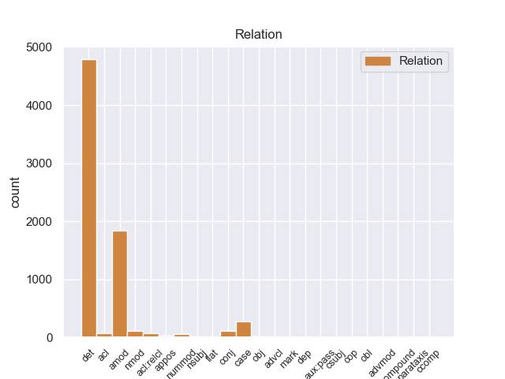
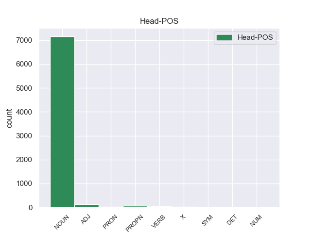
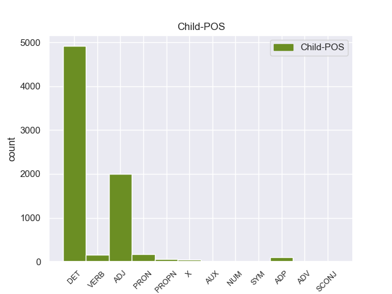

Distribution of features within this leaf



Agreement Rules sorted by frequency.
- When the dependent token is the determiner(det) of the head token, and the dependent token is DET.
1 Αυτό _ _ _ _ 0 _ _ _
2 μπορεί _ _ _ _ 0 _ _ _
3 να _ _ _ _ 0 _ _ _
4 μην _ _ _ _ 0 _ _ _
5 οδηγήσει _ _ _ _ 0 _ _ _
6 σ _ _ _ _ 0 _ _ _
7 τη _ _ _ _ 0 _ _ _
8 λήξη _ _ _ _ 0 _ _ _
9 του _ _ _ _ 0 _ _ _
10 εν _ _ _ _ 0 _ _ _
11 λόγω _ _ _ _ 0 _ _ _
12 ζητήματος _ _ _ _ 0 _ _ _
13 αλλά _ _ _ _ 0 _ _ _
14 , _ _ _ _ 0 _ _ _
15 σ _ _ _ _ 0 _ _ _
16 τη _ _ _ _ 0 _ _ _
17 μορφή _ _ _ _ 0 _ _ _
18 υπό _ _ _ _ 0 _ _ _
19 την _ _ _ _ 0 _ _ _
20 οποία _ _ _ _ 0 _ _ _
21 την _ _ _ _ 0 _ _ _
22 λάβαμε _ _ _ _ 0 _ _ _
23 , _ _ _ _ 0 _ _ _
24 αυτή _ _ _ _ 0 _ _ _
25 η _ _ _ _ 0 _ _ _
26 αίτηση _ _ _ _ 0 _ _ _
27 άρσης _ _ _ _ 0 _ _ _
28 της _ _ _ _ 0 _ _ _
29 ασυλίας _ _ _ _ 0 _ _ _
30 ήταν _ _ _ _ 0 _ _ _
31 , _ _ _ _ 0 _ _ _
32 κατά _ _ _ _ 0 _ _ _
33 την eτη DET _ Definite=Def|Gender=Fem|Number=Sing|PronType=Art 34 det _ _
34 άποψη άποψη NOUN _ Gender=Fem|Number=Sing 0 _ _ _
35 της _ _ _ _ 0 _ _ _
36 Επιτροπής _ _ _ _ 0 _ _ _
37 Νομικών _ _ _ _ 0 _ _ _
38 Θεμάτων _ _ _ _ 0 _ _ _
39 , _ _ _ _ 0 _ _ _
40 απαράδεκτη _ _ _ _ 0 _ _ _
41 , _ _ _ _ 0 _ _ _
42 άποψη _ _ _ _ 0 _ _ _
43 την _ _ _ _ 0 _ _ _
44 οποία _ _ _ _ 0 _ _ _
45 συνιστώ _ _ _ _ 0 _ _ _
46 σ _ _ _ _ 0 _ _ _
47 το _ _ _ _ 0 _ _ _
48 Σώμα _ _ _ _ 0 _ _ _
49 να _ _ _ _ 0 _ _ _
50 υιοθετήσει _ _ _ _ 0 _ _ _
51 . _ _ _ _ 0 _ _ _
1 Αυτό _ _ _ _ 0 _ _ _
2 μπορεί _ _ _ _ 0 _ _ _
3 να _ _ _ _ 0 _ _ _
4 μην _ _ _ _ 0 _ _ _
5 οδηγήσει _ _ _ _ 0 _ _ _
6 σ _ _ _ _ 0 _ _ _
7 τη _ _ _ _ 0 _ _ _
8 λήξη _ _ _ _ 0 _ _ _
9 του _ _ _ _ 0 _ _ _
10 εν _ _ _ _ 0 _ _ _
11 λόγω _ _ _ _ 0 _ _ _
12 ζητήματος _ _ _ _ 0 _ _ _
13 αλλά _ _ _ _ 0 _ _ _
14 , _ _ _ _ 0 _ _ _
15 σ _ _ _ _ 0 _ _ _
16 τη _ _ _ _ 0 _ _ _
17 μορφή _ _ _ _ 0 _ _ _
18 υπό _ _ _ _ 0 _ _ _
19 την _ _ _ _ 0 _ _ _
20 οποία _ _ _ _ 0 _ _ _
21 την _ _ _ _ 0 _ _ _
22 λάβαμε _ _ _ _ 0 _ _ _
23 , _ _ _ _ 0 _ _ _
24 αυτή _ _ _ _ 0 _ _ _
25 η _ _ _ _ 0 _ _ _
26 αίτηση _ _ _ _ 0 _ _ _
27 άρσης _ _ _ _ 0 _ _ _
28 της _ _ _ _ 0 _ _ _
29 ασυλίας _ _ _ _ 0 _ _ _
30 ήταν _ _ _ _ 0 _ _ _
31 , _ _ _ _ 0 _ _ _
32 κατά _ _ _ _ 0 _ _ _
33 την _ _ _ _ 0 _ _ _
34 άποψη _ _ _ _ 0 _ _ _
35 της _ _ _ _ 0 _ _ _
36 Επιτροπής _ _ _ _ 0 _ _ _
37 Νομικών _ _ _ _ 0 _ _ _
38 Θεμάτων _ _ _ _ 0 _ _ _
39 , _ _ _ _ 0 _ _ _
40 απαράδεκτη απαράδεκτo ADJ _ Gender=Fem|Number=Sing 42 amod _ _
41 , _ _ _ _ 0 _ _ _
42 άποψη άποψo NOUN _ Gender=Fem|Number=Sing 0 _ _ _
43 την _ _ _ _ 0 _ _ _
44 οποία _ _ _ _ 0 _ _ _
45 συνιστώ _ _ _ _ 0 _ _ _
46 σ _ _ _ _ 0 _ _ _
47 το _ _ _ _ 0 _ _ _
48 Σώμα _ _ _ _ 0 _ _ _
49 να _ _ _ _ 0 _ _ _
50 υιοθετήσει _ _ _ _ 0 _ _ _
51 . _ _ _ _ 0 _ _ _
1 Αυτό _ _ _ _ 0 _ _ _
2 μπορεί _ _ _ _ 0 _ _ _
3 να _ _ _ _ 0 _ _ _
4 μην _ _ _ _ 0 _ _ _
5 οδηγήσει _ _ _ _ 0 _ _ _
6 σ _ _ _ _ 0 _ _ _
7 τη _ _ _ _ 0 _ _ _
8 λήξη _ _ _ _ 0 _ _ _
9 του του DET _ Definite=Def|Gender=Masc|Number=Sing|PronType=Art 12 case _ _
10 εν _ _ _ _ 0 _ _ _
11 λόγω _ _ _ _ 0 _ _ _
12 ζητήματος ζητήματος NOUN _ Gender=Masc|Number=Sing 0 _ _ _
13 αλλά _ _ _ _ 0 _ _ _
14 , _ _ _ _ 0 _ _ _
15 σ _ _ _ _ 0 _ _ _
16 τη _ _ _ _ 0 _ _ _
17 μορφή _ _ _ _ 0 _ _ _
18 υπό _ _ _ _ 0 _ _ _
19 την _ _ _ _ 0 _ _ _
20 οποία _ _ _ _ 0 _ _ _
21 την _ _ _ _ 0 _ _ _
22 λάβαμε _ _ _ _ 0 _ _ _
23 , _ _ _ _ 0 _ _ _
24 αυτή _ _ _ _ 0 _ _ _
25 η _ _ _ _ 0 _ _ _
26 αίτηση _ _ _ _ 0 _ _ _
27 άρσης _ _ _ _ 0 _ _ _
28 της _ _ _ _ 0 _ _ _
29 ασυλίας _ _ _ _ 0 _ _ _
30 ήταν _ _ _ _ 0 _ _ _
31 , _ _ _ _ 0 _ _ _
32 κατά _ _ _ _ 0 _ _ _
33 την _ _ _ _ 0 _ _ _
34 άποψη _ _ _ _ 0 _ _ _
35 της _ _ _ _ 0 _ _ _
36 Επιτροπής _ _ _ _ 0 _ _ _
37 Νομικών _ _ _ _ 0 _ _ _
38 Θεμάτων _ _ _ _ 0 _ _ _
39 , _ _ _ _ 0 _ _ _
40 απαράδεκτη _ _ _ _ 0 _ _ _
41 , _ _ _ _ 0 _ _ _
42 άποψη _ _ _ _ 0 _ _ _
43 την _ _ _ _ 0 _ _ _
44 οποία _ _ _ _ 0 _ _ _
45 συνιστώ _ _ _ _ 0 _ _ _
46 σ _ _ _ _ 0 _ _ _
47 το _ _ _ _ 0 _ _ _
48 Σώμα _ _ _ _ 0 _ _ _
49 να _ _ _ _ 0 _ _ _
50 υιοθετήσει _ _ _ _ 0 _ _ _
51 . _ _ _ _ 0 _ _ _
1 Τόσο _ _ _ _ 0 _ _ _
2 το _ _ _ _ 0 _ _ _
3 ζήτημα _ _ _ _ 0 _ _ _
4 της _ _ _ _ 0 _ _ _
5 ασυλίας _ _ _ _ 0 _ _ _
6 όσο _ _ _ _ 0 _ _ _
7 και _ _ _ _ 0 _ _ _
8 η _ _ _ _ 0 _ _ _
9 αίτηση _ _ _ _ 0 _ _ _
10 για _ _ _ _ 0 _ _ _
11 άρση _ _ _ _ 0 _ _ _
12 της _ _ _ _ 0 _ _ _
13 έχουν _ _ _ _ 0 _ _ _
14 σχέση _ _ _ _ 0 _ _ _
15 μόνο _ _ _ _ 0 _ _ _
16 με _ _ _ _ 0 _ _ _
17 το _ _ _ _ 0 _ _ _
18 εάν _ _ _ _ 0 _ _ _
19 το _ _ _ _ 0 _ _ _
20 Δικαστήριο _ _ _ _ 0 _ _ _
21 μπορεί _ _ _ _ 0 _ _ _
22 να _ _ _ _ 0 _ _ _
23 εκδώσει _ _ _ _ 0 _ _ _
24 δεσμευτικά _ _ _ _ 0 _ _ _
25 βουλεύματα _ _ _ _ 0 _ _ _
26 για _ _ _ _ 0 _ _ _
27 τον _ _ _ _ 0 _ _ _
28 περιορισμό _ _ _ _ 0 _ _ _
29 της _ _ _ _ 0 _ _ _
30 ελεύθερης _ _ _ _ 0 _ _ _
31 μετακίνησης _ _ _ _ 0 _ _ _
32 των eτ ADP _ Definite=Def|Gender=Masc|Number=Plur|PronType=Art 33 case _ _
33 βουλευτών βουλευτ NOUN _ Gender=Masc|Number=Plur 0 _ _ _
34 του _ _ _ _ 0 _ _ _
35 Ευρωπαϊκού _ _ _ _ 0 _ _ _
36 Κοινοβουλίου _ _ _ _ 0 _ _ _
37 ή _ _ _ _ 0 _ _ _
38 την _ _ _ _ 0 _ _ _
39 ελευθερία _ _ _ _ 0 _ _ _
40 τους _ _ _ _ 0 _ _ _
41 να _ _ _ _ 0 _ _ _
42 έρχονται _ _ _ _ 0 _ _ _
43 σε _ _ _ _ 0 _ _ _
44 επικοινωνία _ _ _ _ 0 _ _ _
45 με _ _ _ _ 0 _ _ _
46 άλλα _ _ _ _ 0 _ _ _
47 πρόσωπα _ _ _ _ 0 _ _ _
48 . _ _ _ _ 0 _ _ _
1 Η _ _ _ _ 0 _ _ _
2 Μπενφίκα _ _ _ _ 0 _ _ _
3 ήταν _ _ _ _ 0 _ _ _
4 πιο _ _ _ _ 0 _ _ _
5 επιθετική επιθετικo ADJ _ Gender=Fem|Number=Sing 0 _ _ _
6 και _ _ _ _ 0 _ _ _
7 καλύτερη καλύτερo ADJ _ Gender=Fem|Number=Sing 5 conj _ _
8 σ _ _ _ _ 0 _ _ _
9 το _ _ _ _ 0 _ _ _
10 πρώτο _ _ _ _ 0 _ _ _
11 ημίχρονο _ _ _ _ 0 _ _ _
12 , _ _ _ _ 0 _ _ _
13 με _ _ _ _ 0 _ _ _
14 αποτέλεσμα _ _ _ _ 0 _ _ _
15 να _ _ _ _ 0 _ _ _
16 ανοίξει _ _ _ _ 0 _ _ _
17 το _ _ _ _ 0 _ _ _
18 σκορ _ _ _ _ 0 _ _ _
19 σ _ _ _ _ 0 _ _ _
20 το _ _ _ _ 0 _ _ _
21 πρώτο _ _ _ _ 0 _ _ _
22 λεπτό _ _ _ _ 0 _ _ _
23 των _ _ _ _ 0 _ _ _
24 καθυστερήσεων _ _ _ _ 0 _ _ _
25 , _ _ _ _ 0 _ _ _
26 χάρη _ _ _ _ 0 _ _ _
27 σ _ _ _ _ 0 _ _ _
28 τον _ _ _ _ 0 _ _ _
29 Μάξι _ _ _ _ 0 _ _ _
30 Περέιρα _ _ _ _ 0 _ _ _
31 . _ _ _ _ 0 _ _ _
1 Όμως _ _ _ _ 0 _ _ _
2 , _ _ _ _ 0 _ _ _
3 ο _ _ _ _ 0 _ _ _
4 Υπουργός _ _ _ _ 0 _ _ _
5 Δικαιοσύνης _ _ _ _ 0 _ _ _
6 διαβίβασε _ _ _ _ 0 _ _ _
7 την _ _ _ _ 0 _ _ _
8 αίτηση αίτηση NOUN _ Gender=Fem|Number=Sing 0 _ _ _
9 άρσης _ _ _ _ 0 _ _ _
10 της _ _ _ _ 0 _ _ _
11 ασυλίας _ _ _ _ 0 _ _ _
12 , _ _ _ _ 0 _ _ _
13 συνοδευόμενη συνοδευόμενo VERB _ Gender=Fem|Number=Sing|VerbForm=Part 8 acl _ _
14 από _ _ _ _ 0 _ _ _
15 τις _ _ _ _ 0 _ _ _
16 διαβιβαστικές _ _ _ _ 0 _ _ _
17 επιστολές _ _ _ _ 0 _ _ _
18 τόσο _ _ _ _ 0 _ _ _
19 του _ _ _ _ 0 _ _ _
20 Εισαγγελέα _ _ _ _ 0 _ _ _
21 Πλημμελειοδικών _ _ _ _ 0 _ _ _
22 όσο _ _ _ _ 0 _ _ _
23 και _ _ _ _ 0 _ _ _
24 του _ _ _ _ 0 _ _ _
25 Εισαγγελέα _ _ _ _ 0 _ _ _
26 Εφετών _ _ _ _ 0 _ _ _
27 , _ _ _ _ 0 _ _ _
28 χωρίς _ _ _ _ 0 _ _ _
29 να _ _ _ _ 0 _ _ _
30 προβαίνει _ _ _ _ 0 _ _ _
31 σε _ _ _ _ 0 _ _ _
32 κανέναν _ _ _ _ 0 _ _ _
33 σχολιασμό _ _ _ _ 0 _ _ _
34 . _ _ _ _ 0 _ _ _
1 Κύριε _ _ _ _ 0 _ _ _
2 Πρόεδρε _ _ _ _ 0 _ _ _
3 , _ _ _ _ 0 _ _ _
4 οι _ _ _ _ 0 _ _ _
5 υπό _ _ _ _ 0 _ _ _
6 συζήτηση _ _ _ _ 0 _ _ _
7 υποθέσεις _ _ _ _ 0 _ _ _
8 αφορούν _ _ _ _ 0 _ _ _
9 πολύ _ _ _ _ 0 _ _ _
10 σοβαρές _ _ _ _ 0 _ _ _
11 κατηγορίες _ _ _ _ 0 _ _ _
12 , _ _ _ _ 0 _ _ _
13 οι _ _ _ _ 0 _ _ _
14 οποίες _ _ _ _ 0 _ _ _
15 βαρύνουν _ _ _ _ 0 _ _ _
16 δύο _ _ _ _ 0 _ _ _
17 βουλευτές _ _ _ _ 0 _ _ _
18 του _ _ _ _ 0 _ _ _
19 Σώματος _ _ _ _ 0 _ _ _
20 και _ _ _ _ 0 _ _ _
21 αναφέρονται _ _ _ _ 0 _ _ _
22 σ _ _ _ _ 0 _ _ _
23 την _ _ _ _ 0 _ _ _
24 πρώτη πρώτo ADJ _ Gender=Fem|Number=Sing|NumType=Ord 25 nummod _ _
25 σελίδα σελίδα NOUN _ Gender=Fem|Number=Sing 0 _ _ _
26 της _ _ _ _ 0 _ _ _
27 αιτιολογικής _ _ _ _ 0 _ _ _
28 έκθεσης _ _ _ _ 0 _ _ _
29 της _ _ _ _ 0 _ _ _
30 έκθεσής _ _ _ _ 0 _ _ _
31 μου _ _ _ _ 0 _ _ _
32 , _ _ _ _ 0 _ _ _
33 σ _ _ _ _ 0 _ _ _
34 την _ _ _ _ 0 _ _ _
35 οποία _ _ _ _ 0 _ _ _
36 συνιστώ _ _ _ _ 0 _ _ _
37 σ _ _ _ _ 0 _ _ _
38 τους _ _ _ _ 0 _ _ _
39 συναδέλφους _ _ _ _ 0 _ _ _
40 να _ _ _ _ 0 _ _ _
41 ρίξουν _ _ _ _ 0 _ _ _
42 μια _ _ _ _ 0 _ _ _
43 ματιά _ _ _ _ 0 _ _ _
44 . _ _ _ _ 0 _ _ _
1 Τόσο _ _ _ _ 0 _ _ _
2 το _ _ _ _ 0 _ _ _
3 ζήτημα _ _ _ _ 0 _ _ _
4 της _ _ _ _ 0 _ _ _
5 ασυλίας _ _ _ _ 0 _ _ _
6 όσο _ _ _ _ 0 _ _ _
7 και _ _ _ _ 0 _ _ _
8 η _ _ _ _ 0 _ _ _
9 αίτηση _ _ _ _ 0 _ _ _
10 για _ _ _ _ 0 _ _ _
11 άρση άρση NOUN _ Gender=Fem|Number=Sing 0 _ _ _
12 της της PRON _ Case=Acc|Gender=Fem|Number=Sing|Person=3|PrepCase=Npr|PronType=Prs 11 amod _ _
13 έχουν _ _ _ _ 0 _ _ _
14 σχέση _ _ _ _ 0 _ _ _
15 μόνο _ _ _ _ 0 _ _ _
16 με _ _ _ _ 0 _ _ _
17 το _ _ _ _ 0 _ _ _
18 εάν _ _ _ _ 0 _ _ _
19 το _ _ _ _ 0 _ _ _
20 Δικαστήριο _ _ _ _ 0 _ _ _
21 μπορεί _ _ _ _ 0 _ _ _
22 να _ _ _ _ 0 _ _ _
23 εκδώσει _ _ _ _ 0 _ _ _
24 δεσμευτικά _ _ _ _ 0 _ _ _
25 βουλεύματα _ _ _ _ 0 _ _ _
26 για _ _ _ _ 0 _ _ _
27 τον _ _ _ _ 0 _ _ _
28 περιορισμό _ _ _ _ 0 _ _ _
29 της _ _ _ _ 0 _ _ _
30 ελεύθερης _ _ _ _ 0 _ _ _
31 μετακίνησης _ _ _ _ 0 _ _ _
32 των _ _ _ _ 0 _ _ _
33 βουλευτών _ _ _ _ 0 _ _ _
34 του _ _ _ _ 0 _ _ _
35 Ευρωπαϊκού _ _ _ _ 0 _ _ _
36 Κοινοβουλίου _ _ _ _ 0 _ _ _
37 ή _ _ _ _ 0 _ _ _
38 την _ _ _ _ 0 _ _ _
39 ελευθερία _ _ _ _ 0 _ _ _
40 τους _ _ _ _ 0 _ _ _
41 να _ _ _ _ 0 _ _ _
42 έρχονται _ _ _ _ 0 _ _ _
43 σε _ _ _ _ 0 _ _ _
44 επικοινωνία _ _ _ _ 0 _ _ _
45 με _ _ _ _ 0 _ _ _
46 άλλα _ _ _ _ 0 _ _ _
47 πρόσωπα _ _ _ _ 0 _ _ _
48 . _ _ _ _ 0 _ _ _
1 Έχω _ _ _ _ 0 _ _ _
2 θορυβηθεί _ _ _ _ 0 _ _ _
3 από _ _ _ _ 0 _ _ _
4 τους _ _ _ _ 0 _ _ _
5 αριθμούς _ _ _ _ 0 _ _ _
6 που _ _ _ _ 0 _ _ _
7 ανακοίνωσε _ _ _ _ 0 _ _ _
8 η _ _ _ _ 0 _ _ _
9 Επιτροπή _ _ _ _ 0 _ _ _
10 σχετικά _ _ _ _ 0 _ _ _
11 με _ _ _ _ 0 _ _ _
12 τις _ _ _ _ 0 _ _ _
13 καταστροφές καταστροφέ NOUN _ Gender=Masc|Number=Plur 0 _ _ _
14 που _ _ _ _ 0 _ _ _
15 έχουν _ _ _ _ 0 _ _ _
16 γίνει γίνr VERB _ Gender=Masc|Number=Sing|Tense=Past|VerbForm=Part 13 acl:relcl _ _
17 τον _ _ _ _ 0 _ _ _
18 τελευταίο _ _ _ _ 0 _ _ _
19 καιρό _ _ _ _ 0 _ _ _
20 , _ _ _ _ 0 _ _ _
21 ακόμα _ _ _ _ 0 _ _ _
22 και _ _ _ _ 0 _ _ _
23 αν _ _ _ _ 0 _ _ _
24 δούμε _ _ _ _ 0 _ _ _
25 μόνο _ _ _ _ 0 _ _ _
26 τα _ _ _ _ 0 _ _ _
27 προγράμματα _ _ _ _ 0 _ _ _
28 τα _ _ _ _ 0 _ _ _
29 οποία _ _ _ _ 0 _ _ _
30 έχει _ _ _ _ 0 _ _ _
31 χρηματοδοτήσει _ _ _ _ 0 _ _ _
32 η _ _ _ _ 0 _ _ _
33 Ευρωπαϊκή _ _ _ _ 0 _ _ _
34 Ένωση _ _ _ _ 0 _ _ _
35 . _ _ _ _ 0 _ _ _
1 Σύμφωνα _ _ _ _ 0 _ _ _
2 με _ _ _ _ 0 _ _ _
3 το _ _ _ _ 0 _ _ _
4 άρθρο _ _ _ _ 0 _ _ _
5 10 _ _ _ _ 0 _ _ _
6 του _ _ _ _ 0 _ _ _
7 Πρωτοκόλλου _ _ _ _ 0 _ _ _
8 του _ _ _ _ 0 _ _ _
9 1965 _ _ _ _ 0 _ _ _
10 , _ _ _ _ 0 _ _ _
11 δεν _ _ _ _ 0 _ _ _
12 υφίσταται _ _ _ _ 0 _ _ _
13 σχετική _ _ _ _ 0 _ _ _
14 ασυλία _ _ _ _ 0 _ _ _
15 για _ _ _ _ 0 _ _ _
16 βουλευτή _ _ _ _ 0 _ _ _
17 της _ _ _ _ 0 _ _ _
18 Γαλλικής _ _ _ _ 0 _ _ _
19 Εθνοσυνέλευσης _ _ _ _ 0 _ _ _
20 ή _ _ _ _ 0 _ _ _
21 , _ _ _ _ 0 _ _ _
22 κατά _ _ _ _ 0 _ _ _
23 συνέπεια _ _ _ _ 0 _ _ _
24 , _ _ _ _ 0 _ _ _
25 για _ _ _ _ 0 _ _ _
26 γάλλο _ _ _ _ 0 _ _ _
27 βουλευτή _ _ _ _ 0 _ _ _
28 του _ _ _ _ 0 _ _ _
29 Ευρωπαϊκού _ _ _ _ 0 _ _ _
30 Κοινοβουλίου _ _ _ _ 0 _ _ _
31 σε _ _ _ _ 0 _ _ _
32 περίπτωση _ _ _ _ 0 _ _ _
33 δίωξης _ _ _ _ 0 _ _ _
34 για _ _ _ _ 0 _ _ _
35 κατηγορίες _ _ _ _ 0 _ _ _
36 αυτού αυτού ADJ _ Gender=Masc|Number=Sing|PronType=Ind 38 det _ _
37 του _ _ _ _ 0 _ _ _
38 είδους είδους NOUN _ Gender=Masc|Number=Sing 0 _ _ _
39 . _ _ _ _ 0 _ _ _
1 Σ _ _ _ _ 0 _ _ _
2 τις _ _ _ _ 0 _ _ _
3 4_Νοεμβρίου _ _ _ _ 0 _ _ _
4 ο _ _ _ _ 0 _ _ _
5 Βενιζέλος _ _ _ _ 0 _ _ _
6 αναχώρησε _ _ _ _ 0 _ _ _
7 για _ _ _ _ 0 _ _ _
8 το _ _ _ _ 0 _ _ _
9 Παρίσι _ _ _ _ 0 _ _ _
10 , _ _ _ _ 0 _ _ _
11 δηλώνοντας _ _ _ _ 0 _ _ _
12 ότι _ _ _ _ 0 _ _ _
13 αποσύρεται _ _ _ _ 0 _ _ _
14 από _ _ _ _ 0 _ _ _
15 την _ _ _ _ 0 _ _ _
16 ενεργό _ _ _ _ 0 _ _ _
17 πολιτική _ _ _ _ 0 _ _ _
18 και _ _ _ _ 0 _ _ _
19 σκοπεύει _ _ _ _ 0 _ _ _
20 να _ _ _ _ 0 _ _ _
21 ιδιωτεύσει _ _ _ _ 0 _ _ _
22 αλλά _ _ _ _ 0 _ _ _
23 αν _ _ _ _ 0 _ _ _
24 η _ _ _ _ 0 _ _ _
25 χώρα _ _ _ _ 0 _ _ _
26 ζητήσει _ _ _ _ 0 _ _ _
27 τις _ _ _ _ 0 _ _ _
28 υπηρεσίες _ _ _ _ 0 _ _ _
29 του _ _ _ _ 0 _ _ _
30 σ _ _ _ _ 0 _ _ _
31 το _ _ _ _ 0 _ _ _
32 εξωτερικό _ _ _ _ 0 _ _ _
33 , _ _ _ _ 0 _ _ _
34 θα _ _ _ _ 0 _ _ _
35 είναι _ _ _ _ 0 _ _ _
36 σ _ _ _ _ 0 _ _ _
37 τη _ _ _ _ 0 _ _ _
38 διάθεσή διάθεσή NOUN _ Gender=Fem|Number=Sing 0 _ _ _
39 της της PRON _ Case=Acc,Nom|Gender=Fem|Number=Sing|Person=3|PronType=Prs 38 nmod _ _
40 . _ _ _ _ 0 _ _ _
1 Θα _ _ _ _ 0 _ _ _
2 ήθελα _ _ _ _ 0 _ _ _
3 να _ _ _ _ 0 _ _ _
4 επιστήσω _ _ _ _ 0 _ _ _
5 την _ _ _ _ 0 _ _ _
6 προσοχή _ _ _ _ 0 _ _ _
7 όλων _ _ _ _ 0 _ _ _
8 των _ _ _ _ 0 _ _ _
9 συναδέλφων _ _ _ _ 0 _ _ _
10 σ _ _ _ _ 0 _ _ _
11 το _ _ _ _ 0 _ _ _
12 γεγονός _ _ _ _ 0 _ _ _
13 ότι _ _ _ _ 0 _ _ _
14 , _ _ _ _ 0 _ _ _
15 εάν _ _ _ _ 0 _ _ _
16 υπάρχουν _ _ _ _ 0 _ _ _
17 κάποιες _ _ _ _ 0 _ _ _
18 ελευθερίες _ _ _ _ 0 _ _ _
19 οι _ _ _ _ 0 _ _ _
20 οποίες _ _ _ _ 0 _ _ _
21 είναι _ _ _ _ 0 _ _ _
22 ζωτικής _ _ _ _ 0 _ _ _
23 σημασίας _ _ _ _ 0 _ _ _
24 για _ _ _ _ 0 _ _ _
25 την _ _ _ _ 0 _ _ _
26 άσκηση _ _ _ _ 0 _ _ _
27 του _ _ _ _ 0 _ _ _
28 λειτουργήματος _ _ _ _ 0 _ _ _
29 της _ _ _ _ 0 _ _ _
30 δημόσιας _ _ _ _ 0 _ _ _
31 εκπροσώπησης _ _ _ _ 0 _ _ _
32 , _ _ _ _ 0 _ _ _
33 ιδίως _ _ _ _ 0 _ _ _
34 για _ _ _ _ 0 _ _ _
35 ένα _ _ _ _ 0 _ _ _
36 Κοινοβούλιο _ _ _ _ 0 _ _ _
37 σαν _ _ _ _ 0 _ _ _
38 το _ _ _ _ 0 _ _ _
39 δικό _ _ _ _ 0 _ _ _
40 μας _ _ _ _ 0 _ _ _
41 , _ _ _ _ 0 _ _ _
42 η _ _ _ _ 0 _ _ _
43 ελευθερία _ _ _ _ 0 _ _ _
44 της _ _ _ _ 0 _ _ _
45 επικοινωνίας _ _ _ _ 0 _ _ _
46 με _ _ _ _ 0 _ _ _
47 άλλους _ _ _ _ 0 _ _ _
48 πολίτες _ _ _ _ 0 _ _ _
49 και _ _ _ _ 0 _ _ _
50 με _ _ _ _ 0 _ _ _
51 τους _ _ _ _ 0 _ _ _
52 πολίτες _ _ _ _ 0 _ _ _
53 τρίτων _ _ _ _ 0 _ _ _
54 χωρών _ _ _ _ 0 _ _ _
55 , _ _ _ _ 0 _ _ _
56 καθώς _ _ _ _ 0 _ _ _
57 και _ _ _ _ 0 _ _ _
58 η _ _ _ _ 0 _ _ _
59 ελευθερία ελευθερία NOUN _ Gender=Fem|Number=Sing 0 _ _ _
60 μετακίνησης μετακίνησηo ADJ _ Gender=Fem|Number=Sing 59 nmod _ _
61 , _ _ _ _ 0 _ _ _
62 είναι _ _ _ _ 0 _ _ _
63 κρίσιμες _ _ _ _ 0 _ _ _
64 για _ _ _ _ 0 _ _ _
65 τη _ _ _ _ 0 _ _ _
66 διεκπεραίωση _ _ _ _ 0 _ _ _
67 του _ _ _ _ 0 _ _ _
68 έργου _ _ _ _ 0 _ _ _
69 μας _ _ _ _ 0 _ _ _
70 . _ _ _ _ 0 _ _ _
1 Εν _ _ _ _ 0 _ _ _
2 τω τω PRON _ Gender=Masc|Number=Sing 3 det _ _
3 μεταξύ μεταξύ NOUN _ Gender=Masc|Number=Sing 0 _ _ _
4 είχε _ _ _ _ 0 _ _ _
5 ήδη _ _ _ _ 0 _ _ _
6 χρεωθεί _ _ _ _ 0 _ _ _
7 την _ _ _ _ 0 _ _ _
8 οδυνηρή _ _ _ _ 0 _ _ _
9 περιπέτεια _ _ _ _ 0 _ _ _
10 της _ _ _ _ 0 _ _ _
11 Μικρασιατικής _ _ _ _ 0 _ _ _
12 καταστροφής _ _ _ _ 0 _ _ _
13 που _ _ _ _ 0 _ _ _
14 εξυπηρετούσε _ _ _ _ 0 _ _ _
15 τα _ _ _ _ 0 _ _ _
16 σχέδια _ _ _ _ 0 _ _ _
17 των _ _ _ _ 0 _ _ _
18 Μεγάλων _ _ _ _ 0 _ _ _
19 Δυνάμεων _ _ _ _ 0 _ _ _
20 σ _ _ _ _ 0 _ _ _
21 την _ _ _ _ 0 _ _ _
22 περιοχή _ _ _ _ 0 _ _ _
23 και _ _ _ _ 0 _ _ _
24 βασίστηκε _ _ _ _ 0 _ _ _
25 σε _ _ _ _ 0 _ _ _
26 αβάσιμους _ _ _ _ 0 _ _ _
27 σχεδιασμούς _ _ _ _ 0 _ _ _
28 όπως _ _ _ _ 0 _ _ _
29 αυτοί _ _ _ _ 0 _ _ _
30 συνοψίζονταν _ _ _ _ 0 _ _ _
31 σ _ _ _ _ 0 _ _ _
32 το _ _ _ _ 0 _ _ _
33 δόγμα _ _ _ _ 0 _ _ _
34 " _ _ _ _ 0 _ _ _
35 Η _ _ _ _ 0 _ _ _
36 Ελλάς _ _ _ _ 0 _ _ _
37 των _ _ _ _ 0 _ _ _
38 δύο _ _ _ _ 0 _ _ _
39 ηπείρων _ _ _ _ 0 _ _ _
40 και _ _ _ _ 0 _ _ _
41 των _ _ _ _ 0 _ _ _
42 πέντε _ _ _ _ 0 _ _ _
43 θαλασσών _ _ _ _ 0 _ _ _
44 " _ _ _ _ 0 _ _ _
45 . _ _ _ _ 0 _ _ _
1 Το _ _ _ _ 0 _ _ _
2 χρονικό _ _ _ _ 0 _ _ _
3 πλαίσιο _ _ _ _ 0 _ _ _
4 είναι _ _ _ _ 0 _ _ _
5 ήδη _ _ _ _ 0 _ _ _
6 επαρκώς _ _ _ _ 0 _ _ _
7 δομημένο δομημένο ADJ _ Gender=Masc|Number=Sing|VerbForm=Part 0 _ _ _
8 διότι _ _ _ _ 0 _ _ _
9 , _ _ _ _ 0 _ _ _
10 μετά _ _ _ _ 0 _ _ _
11 τη _ _ _ _ 0 _ _ _
12 διαβούλευση _ _ _ _ 0 _ _ _
13 , _ _ _ _ 0 _ _ _
14 ο _ _ _ _ 0 _ _ _
15 τελικός _ _ _ _ 0 _ _ _
16 κανονισμός _ _ _ _ 0 _ _ _
17 της _ _ _ _ 0 _ _ _
18 Επιτροπής _ _ _ _ 0 _ _ _
19 θα _ _ _ _ 0 _ _ _
20 εγκριθεί εγκριθr VERB _ Gender=Masc|Number=Sing|Tense=Past|VerbForm=Part 7 conj _ _
21 πριν _ _ _ _ 0 _ _ _
22 από _ _ _ _ 0 _ _ _
23 το _ _ _ _ 0 _ _ _
24 καλοκαίρι _ _ _ _ 0 _ _ _
25 αυτού _ _ _ _ 0 _ _ _
26 του _ _ _ _ 0 _ _ _
27 έτους _ _ _ _ 0 _ _ _
28 . _ _ _ _ 0 _ _ _
1 Aussie _ _ _ _ 0 _ _ _
2 Rules _ _ _ _ 0 _ _ _
3 Footy _ _ _ _ 0 _ _ _
4 es _ _ _ _ 0 _ _ _
5 un _ _ _ _ 0 _ _ _
6 videojuego videojuego NOUN _ Gender=Masc|Number=Sing 0 _ _ _
7 basado _ _ _ _ 0 _ _ _
8 en _ _ _ _ 0 _ _ _
9 el _ _ _ _ 0 _ _ _
10 fútbol _ _ _ _ 0 _ _ _
11 australiano _ _ _ _ 0 _ _ _
12 , _ _ _ _ 0 _ _ _
13 para _ _ _ _ 0 _ _ _
14 el _ _ _ _ 0 _ _ _
15 Nintendo nintendo PROPN _ Gender=Masc|Number=Sing 6 nmod _ _
16 Entertainment _ _ _ _ 0 _ _ _
17 System _ _ _ _ 0 _ _ _
18 por _ _ _ _ 0 _ _ _
19 Mattel _ _ _ _ 0 _ _ _
20 en _ _ _ _ 0 _ _ _
21 1991 _ _ _ _ 0 _ _ _
22 , _ _ _ _ 0 _ _ _
23 y _ _ _ _ 0 _ _ _
24 lanzado _ _ _ _ 0 _ _ _
25 solo _ _ _ _ 0 _ _ _
26 en _ _ _ _ 0 _ _ _
27 Australia _ _ _ _ 0 _ _ _
28 . _ _ _ _ 0 _ _ _
1 Εδώ _ _ _ _ 0 _ _ _
2 δεν _ _ _ _ 0 _ _ _
3 πρόκειται _ _ _ _ 0 _ _ _
4 για _ _ _ _ 0 _ _ _
5 διοργανικές _ _ _ _ 0 _ _ _
6 θέσεις _ _ _ _ 0 _ _ _
7 , _ _ _ _ 0 _ _ _
8 αλλά _ _ _ _ 0 _ _ _
9 για _ _ _ _ 0 _ _ _
10 θέσεις _ _ _ _ 0 _ _ _
11 εντός _ _ _ _ 0 _ _ _
12 της _ _ _ _ 0 _ _ _
13 Επιτροπής _ _ _ _ 0 _ _ _
14 για _ _ _ _ 0 _ _ _
15 τις _ _ _ _ 0 _ _ _
16 οποίες _ _ _ _ 0 _ _ _
17 υπεύθυνη υπεύθυνo ADJ _ Gender=Fem|Number=Sing|VerbForm=Part 18 acl:relcl _ _
18 υπηρεσία υπηρεσίo NOUN _ Gender=Fem|Number=Sing 0 _ _ _
19 είναι _ _ _ _ 0 _ _ _
20 η _ _ _ _ 0 _ _ _
21 ίδια _ _ _ _ 0 _ _ _
22 η _ _ _ _ 0 _ _ _
23 Επιτροπή _ _ _ _ 0 _ _ _
24 όσον _ _ _ _ 0 _ _ _
25 αφορά _ _ _ _ 0 _ _ _
26 τους _ _ _ _ 0 _ _ _
27 διορισμούς _ _ _ _ 0 _ _ _
28 και _ _ _ _ 0 _ _ _
29 τη _ _ _ _ 0 _ _ _
30 λήψη _ _ _ _ 0 _ _ _
31 αποφάσεων _ _ _ _ 0 _ _ _
32 . _ _ _ _ 0 _ _ _
1 Μπορούμε _ _ _ _ 0 _ _ _
2 λοιπόν _ _ _ _ 0 _ _ _
3 να _ _ _ _ 0 _ _ _
4 χρηματοδοτούμε _ _ _ _ 0 _ _ _
5 προγράμματα _ _ _ _ 0 _ _ _
6 που _ _ _ _ 0 _ _ _
7 τελικά _ _ _ _ 0 _ _ _
8 θα _ _ _ _ 0 _ _ _
9 καταστραφούν _ _ _ _ 0 _ _ _
10 και _ _ _ _ 0 _ _ _
11 πάλι _ _ _ _ 0 _ _ _
12 από _ _ _ _ 0 _ _ _
13 την _ _ _ _ 0 _ _ _
14 ισραηλινή _ _ _ _ 0 _ _ _
15 κυβέρνηση κυβέρνηση NOUN _ Gender=Fem|Number=Sing 0 _ _ _
16 και _ _ _ _ 0 _ _ _
17 τα _ _ _ _ 0 _ _ _
18 τεθωρακισμένα _ _ _ _ 0 _ _ _
19 της της PRON _ Case=Acc|Gender=Fem|Number=Sing|Person=3|PrepCase=Npr|PronType=Prs 15 conj _ _
20 ; _ _ _ _ 0 _ _ _
1 Αυτή αυτo PRON _ Gender=Fem|Number=Sing|PronType=Ind 4 nsubj _ _
2 είναι _ _ _ _ 0 _ _ _
3 η _ _ _ _ 0 _ _ _
4 κατάσταση κατάσταση NOUN _ Gender=Fem|Number=Sing 0 _ _ _
5 επί _ _ _ _ 0 _ _ _
6 της _ _ _ _ 0 _ _ _
7 οποίας _ _ _ _ 0 _ _ _
8 πρέπει _ _ _ _ 0 _ _ _
9 να _ _ _ _ 0 _ _ _
10 αποφασίσουμε _ _ _ _ 0 _ _ _
11 . _ _ _ _ 0 _ _ _
1 Επίσης _ _ _ _ 0 _ _ _
2 η _ _ _ _ 0 _ _ _
3 Δυτικοαφρικανική δυτικοαφρικανική PROPN _ Gender=Fem|Number=Sing 4 amod _ _
4 Ένωση ένωση PROPN _ Gender=Fem|Number=Sing 0 _ _ _
5 στέλνει _ _ _ _ 0 _ _ _
6 άλλους _ _ _ _ 0 _ _ _
7 δύο _ _ _ _ 0 _ _ _
8 χιλιάδες _ _ _ _ 0 _ _ _
9 στρατιώτες _ _ _ _ 0 _ _ _
10 , _ _ _ _ 0 _ _ _
11 σ _ _ _ _ 0 _ _ _
12 το _ _ _ _ 0 _ _ _
13 πλαίσιο _ _ _ _ 0 _ _ _
14 δύναμης _ _ _ _ 0 _ _ _
15 που _ _ _ _ 0 _ _ _
16 έχει _ _ _ _ 0 _ _ _
17 εξουσιοδοτηθεί _ _ _ _ 0 _ _ _
18 από _ _ _ _ 0 _ _ _
19 τα _ _ _ _ 0 _ _ _
20 Ηνωμένα _ _ _ _ 0 _ _ _
21 Έθνη _ _ _ _ 0 _ _ _
22 . _ _ _ _ 0 _ _ _
1 Como _ _ _ _ 0 _ _ _
2 los _ _ _ _ 0 _ _ _
3 contagios _ _ _ _ 0 _ _ _
4 no _ _ _ _ 0 _ _ _
5 paraban _ _ _ _ 0 _ _ _
6 , _ _ _ _ 0 _ _ _
7 hartos _ _ _ _ 0 _ _ _
8 decidieron _ _ _ _ 0 _ _ _
9 quemar _ _ _ _ 0 _ _ _
10 el _ _ _ _ 0 _ _ _
11 lienzo _ _ _ _ 0 _ _ _
12 en _ _ _ _ 0 _ _ _
13 la _ _ _ _ 0 _ _ _
14 actual _ _ _ _ 0 _ _ _
15 plaza plaza NOUN _ Gender=Fem|Number=Sing 0 _ _ _
16 Quemada quemada PROPN _ Gender=Fem|Number=Sing|VerbForm=Part 15 appos _ SpaceAfter=No
17 , _ _ _ _ 0 _ _ _
18 pero _ _ _ _ 0 _ _ _
19 el _ _ _ _ 0 _ _ _
20 lienzo _ _ _ _ 0 _ _ _
21 no _ _ _ _ 0 _ _ _
22 ardió _ _ _ _ 0 _ _ _
23 . _ _ _ _ 0 _ _ _
1 Από _ _ _ _ 0 _ _ _
2 την _ _ _ _ 0 _ _ _
3 στιγμή _ _ _ _ 0 _ _ _
4 που _ _ _ _ 0 _ _ _
5 θα _ _ _ _ 0 _ _ _
6 έχει _ _ _ _ 0 _ _ _
7 εγκριθεί _ _ _ _ 0 _ _ _
8 , _ _ _ _ 0 _ _ _
9 η _ _ _ _ 0 _ _ _
10 οδηγία _ _ _ _ 0 _ _ _
11 θα _ _ _ _ 0 _ _ _
12 συμπληρώσει _ _ _ _ 0 _ _ _
13 το _ _ _ _ 0 _ _ _
14 κοινοτικό _ _ _ _ 0 _ _ _
15 πλαίσιο _ _ _ _ 0 _ _ _
16 σ _ _ _ _ 0 _ _ _
17 τον _ _ _ _ 0 _ _ _
18 τομέα _ _ _ _ 0 _ _ _
19 της _ _ _ _ 0 _ _ _
20 πληροφόρησης _ _ _ _ 0 _ _ _
21 και _ _ _ _ 0 _ _ _
22 της _ _ _ _ 0 _ _ _
23 διαβούλευσης _ _ _ _ 0 _ _ _
24 των των ADP _ Definite=Def|Gender=Masc|Number=Plur|PronType=Art 25 det _ _
25 εργαζομένων εργαζομένω NOUN _ Gender=Masc|Number=Plur 0 _ _ _
26 , _ _ _ _ 0 _ _ _
27 ένα _ _ _ _ 0 _ _ _
28 πλαίσιο _ _ _ _ 0 _ _ _
29 το _ _ _ _ 0 _ _ _
30 οποίο _ _ _ _ 0 _ _ _
31 παρέχει _ _ _ _ 0 _ _ _
32 σ _ _ _ _ 0 _ _ _
33 τις _ _ _ _ 0 _ _ _
34 ευρωπαϊκές _ _ _ _ 0 _ _ _
35 επιχειρήσεις _ _ _ _ 0 _ _ _
36 και _ _ _ _ 0 _ _ _
37 σ _ _ _ _ 0 _ _ _
38 τους _ _ _ _ 0 _ _ _
39 εργαζομένους _ _ _ _ 0 _ _ _
40 σε _ _ _ _ 0 _ _ _
41 αυτές _ _ _ _ 0 _ _ _
42 ένα _ _ _ _ 0 _ _ _
43 ουσιαστικό _ _ _ _ 0 _ _ _
44 εργαλείο _ _ _ _ 0 _ _ _
45 που _ _ _ _ 0 _ _ _
46 θα _ _ _ _ 0 _ _ _
47 διευκολύνει _ _ _ _ 0 _ _ _
48 την _ _ _ _ 0 _ _ _
49 αλλαγή _ _ _ _ 0 _ _ _
50 και _ _ _ _ 0 _ _ _
51 θα _ _ _ _ 0 _ _ _
52 διασφαλίσει _ _ _ _ 0 _ _ _
53 τη _ _ _ _ 0 _ _ _
54 συνέχειά _ _ _ _ 0 _ _ _
55 της _ _ _ _ 0 _ _ _
56 με _ _ _ _ 0 _ _ _
57 κοινωνικά _ _ _ _ 0 _ _ _
58 αποδεκτό _ _ _ _ 0 _ _ _
59 τρόπο _ _ _ _ 0 _ _ _
60 . _ _ _ _ 0 _ _ _
1 Monomma monomma PROPN _ Gender=Fem|Number=Sing 5 nsubj _ _
2 semiaeneum _ _ _ _ 0 _ _ _
3 es _ _ _ _ 0 _ _ _
4 una _ _ _ _ 0 _ _ _
5 especie especie NOUN _ Gender=Fem|Number=Sing 0 _ _ _
6 de _ _ _ _ 0 _ _ _
7 coleóptero _ _ _ _ 0 _ _ _
8 de _ _ _ _ 0 _ _ _
9 la _ _ _ _ 0 _ _ _
10 familia _ _ _ _ 0 _ _ _
11 Monommatidae _ _ _ _ 0 _ _ _
12 . _ _ _ _ 0 _ _ _
1 Ευχαριστώ _ _ _ _ 0 _ _ _
2 όλους _ _ _ _ 0 _ _ _
3 τους _ _ _ _ 0 _ _ _
4 εισηγητές _ _ _ _ 0 _ _ _
5 για _ _ _ _ 0 _ _ _
6 το _ _ _ _ 0 _ _ _
7 έργο _ _ _ _ 0 _ _ _
8 τους _ _ _ _ 0 _ _ _
9 και _ _ _ _ 0 _ _ _
10 τους éτο PRON _ Case=Acc|Gender=Masc|Number=Plur|Person=3|PrepCase=Npr|PronType=Prs 11 obj _ _
11 συγχαίρω συγχαίρω VERB _ Gender=Masc|Number=Sing|VerbForm=Fin 0 _ _ _
12 διότι _ _ _ _ 0 _ _ _
13 συνέταξαν _ _ _ _ 0 _ _ _
14 τρεις _ _ _ _ 0 _ _ _
15 εξαιρετικά _ _ _ _ 0 _ _ _
16 ισόρροπες _ _ _ _ 0 _ _ _
17 εκθέσεις _ _ _ _ 0 _ _ _
18 . _ _ _ _ 0 _ _ _
1 Μέχρι _ _ _ _ 0 _ _ _
2 τώρα _ _ _ _ 0 _ _ _
3 , _ _ _ _ 0 _ _ _
4 τα _ _ _ _ 0 _ _ _
5 αίτια _ _ _ _ 0 _ _ _
6 του _ _ _ _ 0 _ _ _
7 δυστυχήματος _ _ _ _ 0 _ _ _
8 παραμένουν _ _ _ _ 0 _ _ _
9 άγνωστα _ _ _ _ 0 _ _ _
10 , _ _ _ _ 0 _ _ _
11 ενώ _ _ _ _ 0 _ _ _
12 δηλώθηκε _ _ _ _ 0 _ _ _
13 ότι _ _ _ _ 0 _ _ _
14 το _ _ _ _ 0 _ _ _
15 λεωφορείο _ _ _ _ 0 _ _ _
16 , _ _ _ _ 0 _ _ _
17 σ _ _ _ _ 0 _ _ _
18 το _ _ _ _ 0 _ _ _
19 οποίο _ _ _ _ 0 _ _ _
20 είχαν _ _ _ _ 0 _ _ _
21 μεταβεί μεταβr VERB _ Gender=Masc|Number=Sing|Tense=Past|VerbForm=Part 26 advcl _ _
22 τα _ _ _ _ 0 _ _ _
23 θύματα _ _ _ _ 0 _ _ _
24 , _ _ _ _ 0 _ _ _
25 ήταν _ _ _ _ 0 _ _ _
26 καινούργιο καινούργιο ADJ _ Gender=Masc|Number=Sing 0 _ _ _
27 και _ _ _ _ 0 _ _ _
28 πως _ _ _ _ 0 _ _ _
29 εκείνη _ _ _ _ 0 _ _ _
30 την _ _ _ _ 0 _ _ _
31 ώρα _ _ _ _ 0 _ _ _
32 σ _ _ _ _ 0 _ _ _
33 το _ _ _ _ 0 _ _ _
34 τούνελ _ _ _ _ 0 _ _ _
35 δεν _ _ _ _ 0 _ _ _
36 υπήρχε _ _ _ _ 0 _ _ _
37 πολλή _ _ _ _ 0 _ _ _
38 κίνηση _ _ _ _ 0 _ _ _
39 . _ _ _ _ 0 _ _ _
1 Σ _ _ _ _ 0 _ _ _
2 την _ _ _ _ 0 _ _ _
3 παραλία _ _ _ _ 0 _ _ _
4 , _ _ _ _ 0 _ _ _
5 οι _ _ _ _ 0 _ _ _
6 λάτρεις _ _ _ _ 0 _ _ _
7 των _ _ _ _ 0 _ _ _
8 θαλάσσιων _ _ _ _ 0 _ _ _
9 σπορ _ _ _ _ 0 _ _ _
10 μπορούν _ _ _ _ 0 _ _ _
11 να _ _ _ _ 0 _ _ _
12 κάνουν _ _ _ _ 0 _ _ _
13 θαλάσσιο _ _ _ _ 0 _ _ _
14 ski ski NOUN _ Gender=Masc|Number=Sing 0 _ _ _
15 , _ _ _ _ 0 _ _ _
16 jet _ _ _ _ 0 _ _ _
17 ski _ _ _ _ 0 _ _ _
18 , _ _ _ _ 0 _ _ _
19 wind wind X _ Gender=Masc|Number=Sing 14 conj _ _
20 surfing _ _ _ _ 0 _ _ _
21 , _ _ _ _ 0 _ _ _
22 αλεξίπτωτο _ _ _ _ 0 _ _ _
23 , _ _ _ _ 0 _ _ _
24 καταδύσεις _ _ _ _ 0 _ _ _
25 , _ _ _ _ 0 _ _ _
26 καθώς _ _ _ _ 0 _ _ _
27 και _ _ _ _ 0 _ _ _
28 να _ _ _ _ 0 _ _ _
29 ενοικιάσουν _ _ _ _ 0 _ _ _
30 σκάφη _ _ _ _ 0 _ _ _
31 αναψυχής _ _ _ _ 0 _ _ _
32 . _ _ _ _ 0 _ _ _
1 Η _ _ _ _ 0 _ _ _
2 επίθεση _ _ _ _ 0 _ _ _
3 της _ _ _ _ 0 _ _ _
4 έκθεσης _ _ _ _ 0 _ _ _
5 Corbett _ _ _ _ 0 _ _ _
6 σ _ _ _ _ 0 _ _ _
7 τις _ _ _ _ 0 _ _ _
8 μικρές _ _ _ _ 0 _ _ _
9 ομάδες _ _ _ _ 0 _ _ _
10 πρέπει _ _ _ _ 0 _ _ _
11 να _ _ _ _ 0 _ _ _
12 αντικατασταθεί _ _ _ _ 0 _ _ _
13 από _ _ _ _ 0 _ _ _
14 μια _ _ _ _ 0 _ _ _
15 συμφωνία _ _ _ _ 0 _ _ _
16 κυρίων _ _ _ _ 0 _ _ _
17 , _ _ _ _ 0 _ _ _
18 με _ _ _ _ 0 _ _ _
19 την _ _ _ _ 0 _ _ _
20 οποία _ _ _ _ 0 _ _ _
21 θα _ _ _ _ 0 _ _ _
22 πετύχουμε _ _ _ _ 0 _ _ _
23 ορισμένους _ _ _ _ 0 _ _ _
24 από _ _ _ _ 0 _ _ _
25 τους _ _ _ _ 0 _ _ _
26 στόχους στόχου NOUN _ Gender=Masc|Number=Plur 0 _ _ _
27 του _ _ _ _ 0 _ _ _
28 κ. κ. X _ Gender=Masc|Number=Sing 26 nmod _ _
29 Corbett _ _ _ _ 0 _ _ _
30 χωρίς _ _ _ _ 0 _ _ _
31 να _ _ _ _ 0 _ _ _
32 περικοπούν _ _ _ _ 0 _ _ _
33 τα _ _ _ _ 0 _ _ _
34 δικαιώματα _ _ _ _ 0 _ _ _
35 των _ _ _ _ 0 _ _ _
36 ομάδων _ _ _ _ 0 _ _ _
37 . _ _ _ _ 0 _ _ _
1 Οι _ _ _ _ 0 _ _ _
2 Έλληνες _ _ _ _ 0 _ _ _
3 όμως _ _ _ _ 0 _ _ _
4 , _ _ _ _ 0 _ _ _
5 εκτός _ _ _ _ 0 _ _ _
6 των _ _ _ _ 0 _ _ _
7 αποδεδειγμένων _ _ _ _ 0 _ _ _
8 ιστορικών _ _ _ _ 0 _ _ _
9 αξιώσεων _ _ _ _ 0 _ _ _
10 κατείχαν _ _ _ _ 0 _ _ _
11 και _ _ _ _ 0 _ _ _
12 πολυάριθμα _ _ _ _ 0 _ _ _
13 χωριά _ _ _ _ 0 _ _ _
14 ιδίως _ _ _ _ 0 _ _ _
15 σ _ _ _ _ 0 _ _ _
16 τα _ _ _ _ 0 _ _ _
17 νότια _ _ _ _ 0 _ _ _
18 που _ _ _ _ 0 _ _ _
19 σχεδόν _ _ _ _ 0 _ _ _
20 όλα _ _ _ _ 0 _ _ _
21 ήταν _ _ _ _ 0 _ _ _
22 ελληνόφωνα _ _ _ _ 0 _ _ _
23 , _ _ _ _ 0 _ _ _
24 και _ _ _ _ 0 _ _ _
25 παρά _ _ _ _ 0 _ _ _
26 την _ _ _ _ 0 _ _ _
27 εξάπλωση _ _ _ _ 0 _ _ _
28 της _ _ _ _ 0 _ _ _
29 βουλγαρικής _ _ _ _ 0 _ _ _
30 Εξαρχίας _ _ _ _ 0 _ _ _
31 με _ _ _ _ 0 _ _ _
32 επισκόπους _ _ _ _ 0 _ _ _
33 - _ _ _ _ 0 _ _ _
34 " _ _ _ _ 0 _ _ _
35 βοηθούς _ _ _ _ 0 _ _ _
36 " _ _ _ _ 0 _ _ _
37 - _ _ _ _ 0 _ _ _
38 , _ _ _ _ 0 _ _ _
39 τους _ _ _ _ 0 _ _ _
40 λεγόμενους _ _ _ _ 0 _ _ _
41 protojereji protojere NOUN _ Gender=Masc|Number=Plur 0 _ _ _
42 ( _ _ _ _ 0 _ _ _
43 = _ _ _ _ 0 _ _ _
44 κάτι κάτι PRON _ Gender=Masc|Number=Sing 41 appos _ _
45 σαν _ _ _ _ 0 _ _ _
46 πρωτοσύγγελοι _ _ _ _ 0 _ _ _
47 ) _ _ _ _ 0 _ _ _
48 , _ _ _ _ 0 _ _ _
49 η _ _ _ _ 0 _ _ _
50 Ελληνική _ _ _ _ 0 _ _ _
51 Εκκλησία _ _ _ _ 0 _ _ _
52 συνέχισε _ _ _ _ 0 _ _ _
53 να _ _ _ _ 0 _ _ _
54 κυριαρχεί _ _ _ _ 0 _ _ _
55 . _ _ _ _ 0 _ _ _
1 Θα _ _ _ _ 0 _ _ _
2 ήθελα _ _ _ _ 0 _ _ _
3 ιδιαίτερα _ _ _ _ 0 _ _ _
4 να _ _ _ _ 0 _ _ _
5 ευχαριστήσω _ _ _ _ 0 _ _ _
6 τον _ _ _ _ 0 _ _ _
7 αντιπρόεδρο _ _ _ _ 0 _ _ _
8 κ. _ _ _ _ 0 _ _ _
9 Friedrich _ _ _ _ 0 _ _ _
10 και _ _ _ _ 0 _ _ _
11 κυρίως _ _ _ _ 0 _ _ _
12 τον _ _ _ _ 0 _ _ _
13 εισηγητή εισηγητή NOUN _ Gender=Masc|Number=Sing 0 _ _ _
14 κ. κ. X _ Gender=Masc|Number=Sing 13 amod _ _
15 Hughes _ _ _ _ 0 _ _ _
16 για _ _ _ _ 0 _ _ _
17 το _ _ _ _ 0 _ _ _
18 εξαίρετο _ _ _ _ 0 _ _ _
19 έργο _ _ _ _ 0 _ _ _
20 τους _ _ _ _ 0 _ _ _
21 . _ _ _ _ 0 _ _ _
1 Η _ _ _ _ 0 _ _ _
2 συγκεκριμένη _ _ _ _ 0 _ _ _
3 συνοικία _ _ _ _ 0 _ _ _
4 ήταν _ _ _ _ 0 _ _ _
5 υπό _ _ _ _ 0 _ _ _
6 πολιορκία _ _ _ _ 0 _ _ _
7 από _ _ _ _ 0 _ _ _
8 τις _ _ _ _ 0 _ _ _
9 κυβερνητικές _ _ _ _ 0 _ _ _
10 δυνάμεις _ _ _ _ 0 _ _ _
11 για _ _ _ _ 0 _ _ _
12 ένα έναo NUM _ Definite=Ind|Gender=Masc|Number=Sing|PronType=Art 13 nummod _ _
13 μήνα μήνα NOUN _ Gender=Masc|Number=Sing 0 _ _ _
14 . _ _ _ _ 0 _ _ _
1 Μόλις _ _ _ _ 0 _ _ _
2 προκύψουν _ _ _ _ 0 _ _ _
3 συστάσεις _ _ _ _ 0 _ _ _
4 προς _ _ _ _ 0 _ _ _
5 την _ _ _ _ 0 _ _ _
6 Επιτροπή _ _ _ _ 0 _ _ _
7 , _ _ _ _ 0 _ _ _
8 η _ _ _ _ 0 _ _ _
9 τελευταία _ _ _ _ 0 _ _ _
10 θα _ _ _ _ 0 _ _ _
11 ασχοληθεί ασχοληθr VERB _ Gender=Masc|Number=Sing|Tense=Past|VerbForm=Part 0 _ _ _
12 αμέσως _ _ _ _ 0 _ _ _
13 με _ _ _ _ 0 _ _ _
14 αυτές éυ PRON _ Gender=Masc|Number=Plur|PronType=Dem 11 obl _ _
15 και _ _ _ _ 0 _ _ _
16 εάν _ _ _ _ 0 _ _ _
17 χρειαστούν _ _ _ _ 0 _ _ _
18 νέες _ _ _ _ 0 _ _ _
19 διαδικασίες _ _ _ _ 0 _ _ _
20 , _ _ _ _ 0 _ _ _
21 φυσικά _ _ _ _ 0 _ _ _
22 , _ _ _ _ 0 _ _ _
23 θα _ _ _ _ 0 _ _ _
24 τις _ _ _ _ 0 _ _ _
25 δρομολογήσει _ _ _ _ 0 _ _ _
26 . _ _ _ _ 0 _ _ _
1 Εδώ _ _ _ _ 0 _ _ _
2 και _ _ _ _ 0 _ _ _
3 ενάμισι ενάμισι ADJ _ Gender=Masc|Number=Sing 4 advmod _ _
4 χρόνο χρόνο NOUN _ Gender=Masc|Number=Sing 0 _ _ _
5 κοιτάζουμε _ _ _ _ 0 _ _ _
6 άπραγοι _ _ _ _ 0 _ _ _
7 τον _ _ _ _ 0 _ _ _
8 εντελώς _ _ _ _ 0 _ _ _
9 άνισο _ _ _ _ 0 _ _ _
10 πόλεμο _ _ _ _ 0 _ _ _
11 που _ _ _ _ 0 _ _ _
12 διεξάγουν _ _ _ _ 0 _ _ _
13 αυτοί _ _ _ _ 0 _ _ _
14 οι _ _ _ _ 0 _ _ _
15 δύο _ _ _ _ 0 _ _ _
16 αντίπαλοι _ _ _ _ 0 _ _ _
17 μεταξύ _ _ _ _ 0 _ _ _
18 τους _ _ _ _ 0 _ _ _
19 , _ _ _ _ 0 _ _ _
20 κοιτάζουμε _ _ _ _ 0 _ _ _
21 τα _ _ _ _ 0 _ _ _
22 τανκς _ _ _ _ 0 _ _ _
23 των _ _ _ _ 0 _ _ _
24 Ισραηλινών _ _ _ _ 0 _ _ _
25 να _ _ _ _ 0 _ _ _
26 καταστρέφουν _ _ _ _ 0 _ _ _
27 σπίτια _ _ _ _ 0 _ _ _
28 και _ _ _ _ 0 _ _ _
29 να _ _ _ _ 0 _ _ _
30 σκοτώνουν _ _ _ _ 0 _ _ _
31 παλαιστίνιους _ _ _ _ 0 _ _ _
32 πολίτες _ _ _ _ 0 _ _ _
33 . _ _ _ _ 0 _ _ _
1 Fue _ _ _ _ 0 _ _ _
2 parte _ _ _ _ 0 _ _ _
3 de _ _ _ _ 0 _ _ _
4 la _ _ _ _ 0 _ _ _
5 escena _ _ _ _ 0 _ _ _
6 musical _ _ _ _ 0 _ _ _
7 post post PROPN _ Gender=Masc 0 _ _ _
8 - _ _ _ _ 0 _ _ _
9 punk punk PROPN _ Gender=Masc 7 flat _ _
10 ocurrida _ _ _ _ 0 _ _ _
11 en _ _ _ _ 0 _ _ _
12 Mánchester _ _ _ _ 0 _ _ _
13 a _ _ _ _ 0 _ _ _
14 finales _ _ _ _ 0 _ _ _
15 de _ _ _ _ 0 _ _ _
16 la _ _ _ _ 0 _ _ _
17 década _ _ _ _ 0 _ _ _
18 de _ _ _ _ 0 _ _ _
19 1970 _ _ _ _ 0 _ _ _
20 , _ _ _ _ 0 _ _ _
21 aunque _ _ _ _ 0 _ _ _
22 es _ _ _ _ 0 _ _ _
23 conocida _ _ _ _ 0 _ _ _
24 en _ _ _ _ 0 _ _ _
25 Argentina _ _ _ _ 0 _ _ _
26 por _ _ _ _ 0 _ _ _
27 haber _ _ _ _ 0 _ _ _
28 tenido _ _ _ _ 0 _ _ _
29 como _ _ _ _ 0 _ _ _
30 miembro _ _ _ _ 0 _ _ _
31 y _ _ _ _ 0 _ _ _
32 baterista _ _ _ _ 0 _ _ _
33 a _ _ _ _ 0 _ _ _
34 Stephanie _ _ _ _ 0 _ _ _
35 Nuttal _ _ _ _ 0 _ _ _
36 , _ _ _ _ 0 _ _ _
37 futura _ _ _ _ 0 _ _ _
38 integrante _ _ _ _ 0 _ _ _
39 fundadora _ _ _ _ 0 _ _ _
40 y _ _ _ _ 0 _ _ _
41 también _ _ _ _ 0 _ _ _
42 baterista _ _ _ _ 0 _ _ _
43 de _ _ _ _ 0 _ _ _
44 el _ _ _ _ 0 _ _ _
45 grupo _ _ _ _ 0 _ _ _
46 de _ _ _ _ 0 _ _ _
47 rock _ _ _ _ 0 _ _ _
48 argentino _ _ _ _ 0 _ _ _
49 Sumo _ _ _ _ 0 _ _ _
50 . _ _ _ _ 0 _ _ _
1 Si _ _ _ _ 0 _ _ _
2 el _ _ _ _ 0 _ _ _
3 país _ _ _ _ 0 _ _ _
4 debe _ _ _ _ 0 _ _ _
5 solicitar _ _ _ _ 0 _ _ _
6 el _ _ _ _ 0 _ _ _
7 ingreso _ _ _ _ 0 _ _ _
8 en _ _ _ _ 0 _ _ _
9 la _ _ _ _ 0 _ _ _
10 Unión _ _ _ _ 0 _ _ _
11 Europea _ _ _ _ 0 _ _ _
12 ha _ _ _ _ 0 _ _ _
13 sido _ _ _ _ 0 _ _ _
14 uno _ _ _ _ 0 _ _ _
15 de _ _ _ _ 0 _ _ _
16 los _ _ _ _ 0 _ _ _
17 temas _ _ _ _ 0 _ _ _
18 más _ _ _ _ 0 _ _ _
19 dominantes _ _ _ _ 0 _ _ _
20 y _ _ _ _ 0 _ _ _
21 divisivos _ _ _ _ 0 _ _ _
22 en _ _ _ _ 0 _ _ _
23 Noruega _ _ _ _ 0 _ _ _
24 debate _ _ _ _ 0 _ _ _
25 político _ _ _ _ 0 _ _ _
26 y _ _ _ _ 0 _ _ _
27 económico _ _ _ _ 0 _ _ _
28 desde _ _ _ _ 0 _ _ _
29 la _ _ _ _ 0 _ _ _
30 Segunda segundo PROPN _ Gender=Fem|Number=Sing 31 nummod _ _
31 Guerra guerra PROPN _ Gender=Fem|Number=Sing 0 _ _ _
32 Mundial _ _ _ _ 0 _ _ _
33 . _ _ _ _ 0 _ _ _
1 Está _ _ _ _ 0 _ _ _
2 conformado conformado VERB _ Gender=Masc|Number=Sing|VerbForm=Part 0 _ _ _
3 por _ _ _ _ 0 _ _ _
4 las _ _ _ _ 0 _ _ _
5 vías _ _ _ _ 0 _ _ _
6 que _ _ _ _ 0 _ _ _
7 se _ _ _ _ 0 _ _ _
8 orientan _ _ _ _ 0 _ _ _
9 en _ _ _ _ 0 _ _ _
10 dirección _ _ _ _ 0 _ _ _
11 norte _ _ _ _ 0 _ _ _
12 -- _ _ _ _ 0 _ _ _
13 sur _ _ _ _ 0 _ _ _
14 , _ _ _ _ 0 _ _ _
15 paralelo paralelo ADJ _ Gender=Masc|Number=Sing 2 parataxis _ _
16 a _ _ _ _ 0 _ _ _
17 el _ _ _ _ 0 _ _ _
18 río _ _ _ _ 0 _ _ _
19 Santa _ _ _ _ 0 _ _ _
20 ; _ _ _ _ 0 _ _ _
1 Σε _ _ _ _ 0 _ _ _
2 ομιλία _ _ _ _ 0 _ _ _
3 του _ _ _ _ 0 _ _ _
4 σ _ _ _ _ 0 _ _ _
5 το _ _ _ _ 0 _ _ _
6 Λευκό _ _ _ _ 0 _ _ _
7 Οίκο _ _ _ _ 0 _ _ _
8 , _ _ _ _ 0 _ _ _
9 ο _ _ _ _ 0 _ _ _
10 πρόεδρος _ _ _ _ 0 _ _ _
11 Ομπάμα _ _ _ _ 0 _ _ _
12 δήλωσε _ _ _ _ 0 _ _ _
13 ότι _ _ _ _ 0 _ _ _
14 ο _ _ _ _ 0 _ _ _
15 εγκέφαλος _ _ _ _ 0 _ _ _
16 παραμένει _ _ _ _ 0 _ _ _
17 επιστημονικό _ _ _ _ 0 _ _ _
18 μυστήριο _ _ _ _ 0 _ _ _
19 , _ _ _ _ 0 _ _ _
20 παρά _ _ _ _ 0 _ _ _
21 το _ _ _ _ 0 _ _ _
22 γεγονός γεγονός NOUN _ Gender=Masc|Number=Sing 0 _ _ _
23 ότι _ _ _ _ 0 _ _ _
24 ο _ _ _ _ 0 _ _ _
25 ίδιος _ _ _ _ 0 _ _ _
26 ο _ _ _ _ 0 _ _ _
27 άνθρωπος _ _ _ _ 0 _ _ _
28 έχει _ _ _ _ 0 _ _ _
29 κατορθώσει κατορθώσr VERB _ Gender=Masc|Number=Sing|Tense=Past|VerbForm=Part 22 ccomp _ _
30 να _ _ _ _ 0 _ _ _
31 λύσει _ _ _ _ 0 _ _ _
32 τα _ _ _ _ 0 _ _ _
33 μυστήρια _ _ _ _ 0 _ _ _
34 του _ _ _ _ 0 _ _ _
35 σύμπαντος _ _ _ _ 0 _ _ _
36 . _ _ _ _ 0 _ _ _
1 Θα _ _ _ _ 0 _ _ _
2 ήταν ήτr VERB _ Gender=Masc|Number=Sing|Tense=Past|VerbForm=Part 0 _ _ _
3 οπωσδήποτε _ _ _ _ 0 _ _ _
4 βλακώδες βλακώδες ADJ _ Gender=Masc|Number=Sing 2 advcl _ _
5 εάν _ _ _ _ 0 _ _ _
6 επιχειρούσαμε _ _ _ _ 0 _ _ _
7 κάτι _ _ _ _ 0 _ _ _
8 τέτοιο _ _ _ _ 0 _ _ _
9 , _ _ _ _ 0 _ _ _
10 διότι _ _ _ _ 0 _ _ _
11 η _ _ _ _ 0 _ _ _
12 OLAF _ _ _ _ 0 _ _ _
13 δεν _ _ _ _ 0 _ _ _
14 αποτελεί _ _ _ _ 0 _ _ _
15 μόνο _ _ _ _ 0 _ _ _
16 βασικό _ _ _ _ 0 _ _ _
17 μέσο _ _ _ _ 0 _ _ _
18 προκειμένου _ _ _ _ 0 _ _ _
19 να _ _ _ _ 0 _ _ _
20 εντατικοποιηθεί _ _ _ _ 0 _ _ _
21 η _ _ _ _ 0 _ _ _
22 συνεργασία _ _ _ _ 0 _ _ _
23 με _ _ _ _ 0 _ _ _
24 τα _ _ _ _ 0 _ _ _
25 κράτη _ _ _ _ 0 _ _ _
26 μέλη _ _ _ _ 0 _ _ _
27 για _ _ _ _ 0 _ _ _
28 την _ _ _ _ 0 _ _ _
29 καταπολέμηση _ _ _ _ 0 _ _ _
30 της _ _ _ _ 0 _ _ _
31 απάτης _ _ _ _ 0 _ _ _
32 αλλά _ _ _ _ 0 _ _ _
33 είναι _ _ _ _ 0 _ _ _
34 φυσικά _ _ _ _ 0 _ _ _
35 και _ _ _ _ 0 _ _ _
36 ένα _ _ _ _ 0 _ _ _
37 καλό _ _ _ _ 0 _ _ _
38 και _ _ _ _ 0 _ _ _
39 αντικειμενικό _ _ _ _ 0 _ _ _
40 μέσο _ _ _ _ 0 _ _ _
41 για _ _ _ _ 0 _ _ _
42 τις _ _ _ _ 0 _ _ _
43 έρευνες _ _ _ _ 0 _ _ _
44 σ _ _ _ _ 0 _ _ _
45 το _ _ _ _ 0 _ _ _
46 εσωτερικό _ _ _ _ 0 _ _ _
47 της _ _ _ _ 0 _ _ _
48 Επιτροπής _ _ _ _ 0 _ _ _
49 . _ _ _ _ 0 _ _ _
1 Είναι _ _ _ _ 0 _ _ _
2 ένα _ _ _ _ 0 _ _ _
3 θέμα _ _ _ _ 0 _ _ _
4 για _ _ _ _ 0 _ _ _
5 το _ _ _ _ 0 _ _ _
6 οποίο _ _ _ _ 0 _ _ _
7 όλοι _ _ _ _ 0 _ _ _
8 μας _ _ _ _ 0 _ _ _
9 θα _ _ _ _ 0 _ _ _
10 συμφωνήσουμε _ _ _ _ 0 _ _ _
11 ότι _ _ _ _ 0 _ _ _
12 πρέπει _ _ _ _ 0 _ _ _
13 να _ _ _ _ 0 _ _ _
14 καθοριστούν _ _ _ _ 0 _ _ _
15 ορισμένες ορισμένε DET _ Gender=Masc|Number=Plur 17 amod _ _
16 ελάχιστες _ _ _ _ 0 _ _ _
17 προδιαγραφές προδιαγραφέ NOUN _ Gender=Masc|Number=Plur 0 _ _ _
18 . _ _ _ _ 0 _ _ _
1 Έτσι _ _ _ _ 0 _ _ _
2 , _ _ _ _ 0 _ _ _
3 αν _ _ _ _ 0 _ _ _
4 και _ _ _ _ 0 _ _ _
5 είμαστε _ _ _ _ 0 _ _ _
6 καταρχήν _ _ _ _ 0 _ _ _
7 κατά _ _ _ _ 0 _ _ _
8 των _ _ _ _ 0 _ _ _
9 ειδικών _ _ _ _ 0 _ _ _
10 τομεακών _ _ _ _ 0 _ _ _
11 κανόνων _ _ _ _ 0 _ _ _
12 , _ _ _ _ 0 _ _ _
13 όπως _ _ _ _ 0 _ _ _
14 είδατε _ _ _ _ 0 _ _ _
15 με _ _ _ _ 0 _ _ _
16 τη _ _ _ _ 0 _ _ _
17 δέσμη _ _ _ _ 0 _ _ _
18 μέτρων _ _ _ _ 0 _ _ _
19 για _ _ _ _ 0 _ _ _
20 τις _ _ _ _ 0 _ _ _
21 τηλεπικοινωνίες _ _ _ _ 0 _ _ _
22 που _ _ _ _ 0 _ _ _
23 κατέθεσε _ _ _ _ 0 _ _ _
24 ο _ _ _ _ 0 _ _ _
25 συνάδελφός συνάδελφός NOUN _ Gender=Masc|Number=Sing 0 _ _ _
26 μου _ _ _ _ 0 _ _ _
27 , _ _ _ _ 0 _ _ _
28 κ. κ. X _ Gender=Masc|Number=Sing 25 appos _ _
29 Liikanen _ _ _ _ 0 _ _ _
30 , _ _ _ _ 0 _ _ _
31 μετακινηθήκαμε _ _ _ _ 0 _ _ _
32 κάπως _ _ _ _ 0 _ _ _
33 προς _ _ _ _ 0 _ _ _
34 την _ _ _ _ 0 _ _ _
35 έγκριση _ _ _ _ 0 _ _ _
36 γενικών _ _ _ _ 0 _ _ _
37 κανόνων _ _ _ _ 0 _ _ _
38 ανταγωνισμού _ _ _ _ 0 _ _ _
39 . _ _ _ _ 0 _ _ _
1 Una _ _ _ _ 0 _ _ _
2 de _ _ _ _ 0 _ _ _
3 las _ _ _ _ 0 _ _ _
4 características _ _ _ _ 0 _ _ _
5 de _ _ _ _ 0 _ _ _
6 el _ _ _ _ 0 _ _ _
7 periodo _ _ _ _ 0 _ _ _
8 es _ _ _ _ 0 _ _ _
9 la _ _ _ _ 0 _ _ _
10 desvalorización _ _ _ _ 0 _ _ _
11 de _ _ _ _ 0 _ _ _
12 el _ _ _ _ 0 _ _ _
13 sentimiento _ _ _ _ 0 _ _ _
14 íntimo _ _ _ _ 0 _ _ _
15 en _ _ _ _ 0 _ _ _
16 favor _ _ _ _ 0 _ _ _
17 de _ _ _ _ 0 _ _ _
18 la _ _ _ _ 0 _ _ _
19 expresión expresión NOUN _ Gender=Fem|Number=Sing 0 _ _ _
20 pública _ _ _ _ 0 _ _ _
21 y _ _ _ _ 0 _ _ _
22 de _ _ _ _ 0 _ _ _
23 la _ _ _ _ 0 _ _ _
24 filosofía _ _ _ _ 0 _ _ _
25 , _ _ _ _ 0 _ _ _
26 más _ _ _ _ 0 _ _ _
27 abstractas abstracto ADJ _ Gender=Fem|Number=Plur 19 appos _ _
28 y _ _ _ _ 0 _ _ _
29 objetivas _ _ _ _ 0 _ _ _
30 . _ _ _ _ 0 _ _ _
1 El _ _ _ _ 0 _ _ _
2 cuento _ _ _ _ 0 _ _ _
3 ha _ _ _ _ 0 _ _ _
4 sido ser AUX _ Gender=Masc|Number=Sing|Tense=Past|VerbForm=Part 5 aux:pass _ _
5 adaptado adaptar VERB _ Gender=Masc|Number=Sing|Tense=Past|VerbForm=Part 0 _ _ _
6 en _ _ _ _ 0 _ _ _
7 los _ _ _ _ 0 _ _ _
8 últimos _ _ _ _ 0 _ _ _
9 dos _ _ _ _ 0 _ _ _
10 siglos _ _ _ _ 0 _ _ _
11 , _ _ _ _ 0 _ _ _
12 desde _ _ _ _ 0 _ _ _
13 obras _ _ _ _ 0 _ _ _
14 de _ _ _ _ 0 _ _ _
15 teatro _ _ _ _ 0 _ _ _
16 a _ _ _ _ 0 _ _ _
17 caricaturas _ _ _ _ 0 _ _ _
18 y _ _ _ _ 0 _ _ _
19 películas _ _ _ _ 0 _ _ _
20 . _ _ _ _ 0 _ _ _
1 Fue _ _ _ _ 0 _ _ _
2 un _ _ _ _ 0 _ _ _
3 académico _ _ _ _ 0 _ _ _
4 argentino _ _ _ _ 0 _ _ _
5 , _ _ _ _ 0 _ _ _
6 rector _ _ _ _ 0 _ _ _
7 de _ _ _ _ 0 _ _ _
8 la _ _ _ _ 0 _ _ _
9 Universidad _ _ _ _ 0 _ _ _
10 Nacional _ _ _ _ 0 _ _ _
11 de _ _ _ _ 0 _ _ _
12 Tucumán _ _ _ _ 0 _ _ _
13 durante _ _ _ _ 0 _ _ _
14 dos _ _ _ _ 0 _ _ _
15 periodos _ _ _ _ 0 _ _ _
16 ( _ _ _ _ 0 _ _ _
17 1927-1933 _ _ _ _ 0 _ _ _
18 , _ _ _ _ 0 _ _ _
19 1937-1940 _ _ _ _ 0 _ _ _
20 ) _ _ _ _ 0 _ _ _
21 , _ _ _ _ 0 _ _ _
22 considerado considerado VERB _ Gender=Masc|Number=Sing|VerbForm=Part 26 cop _ _
23 " _ _ _ _ 0 _ _ _
24 el _ _ _ _ 0 _ _ _
25 primer _ _ _ _ 0 _ _ _
26 rector rector NOUN _ Gender=Masc|Number=Sing 0 _ _ _
27 de _ _ _ _ 0 _ _ _
28 la _ _ _ _ 0 _ _ _
29 Reforma _ _ _ _ 0 _ _ _
30 Universitaria _ _ _ _ 0 _ _ _
31 " _ _ _ _ 0 _ _ _
32 . _ _ _ _ 0 _ _ _
1 En _ _ _ _ 0 _ _ _
2 el _ _ _ _ 0 _ _ _
3 regreso _ _ _ _ 0 _ _ _
4 , _ _ _ _ 0 _ _ _
5 Ángela ángela PROPN _ Gender=Fem|Number=Sing 6 obl _ _
6 sana sano VERB _ Gender=Fem|Number=Sing|VerbForm=Fin 0 _ _ _
7 repentinamente _ _ _ _ 0 _ _ _
8 . _ _ _ _ 0 _ _ _
1 Desde _ _ _ _ 0 _ _ _
2 1965 _ _ _ _ 0 _ _ _
3 hasta _ _ _ _ 0 _ _ _
4 1986 _ _ _ _ 0 _ _ _
5 , _ _ _ _ 0 _ _ _
6 Griffin _ _ _ _ 0 _ _ _
7 presentó _ _ _ _ 0 _ _ _
8 su _ _ _ _ 0 _ _ _
9 propio _ _ _ _ 0 _ _ _
10 talk talk X _ Gender=Masc|Number=Sing 11 compound _ _
11 show show NOUN _ Gender=Masc|Number=Sing 0 _ _ _
12 , _ _ _ _ 0 _ _ _
13 The _ _ _ _ 0 _ _ _
14 Merv _ _ _ _ 0 _ _ _
15 Griffin _ _ _ _ 0 _ _ _
16 Show _ _ _ _ 0 _ _ _
17 , _ _ _ _ 0 _ _ _
18 producido _ _ _ _ 0 _ _ _
19 por _ _ _ _ 0 _ _ _
20 Group _ _ _ _ 0 _ _ _
21 W _ _ _ _ 0 _ _ _
22 ( _ _ _ _ 0 _ _ _
23 Westinghouse _ _ _ _ 0 _ _ _
24 Broadcasting _ _ _ _ 0 _ _ _
25 ) _ _ _ _ 0 _ _ _
26 . _ _ _ _ 0 _ _ _
1 Pelecanimimus _ _ _ _ 0 _ _ _
2 ( _ _ _ _ 0 _ _ _
3 gr. gr. X _ Gender=Masc|Number=Sing 5 dep _ _
4 " _ _ _ _ 0 _ _ _
5 imitador imitador NOUN _ Gender=Masc|Number=Sing 0 _ _ _
6 de _ _ _ _ 0 _ _ _
7 pelícanos _ _ _ _ 0 _ _ _
8 " _ _ _ _ 0 _ _ _
9 ) _ _ _ _ 0 _ _ _
10 es _ _ _ _ 0 _ _ _
11 un _ _ _ _ 0 _ _ _
12 género _ _ _ _ 0 _ _ _
13 representado _ _ _ _ 0 _ _ _
14 por _ _ _ _ 0 _ _ _
15 una _ _ _ _ 0 _ _ _
16 única _ _ _ _ 0 _ _ _
17 especie _ _ _ _ 0 _ _ _
18 de _ _ _ _ 0 _ _ _
19 dinosaurio _ _ _ _ 0 _ _ _
20 terópodo _ _ _ _ 0 _ _ _
21 ornitomimosauriano _ _ _ _ 0 _ _ _
22 basal _ _ _ _ 0 _ _ _
23 , _ _ _ _ 0 _ _ _
24 que _ _ _ _ 0 _ _ _
25 vivió _ _ _ _ 0 _ _ _
26 a _ _ _ _ 0 _ _ _
27 principios _ _ _ _ 0 _ _ _
28 de _ _ _ _ 0 _ _ _
29 el _ _ _ _ 0 _ _ _
30 período _ _ _ _ 0 _ _ _
31 Cretácico _ _ _ _ 0 _ _ _
32 , _ _ _ _ 0 _ _ _
33 hace _ _ _ _ 0 _ _ _
34 algo _ _ _ _ 0 _ _ _
35 más _ _ _ _ 0 _ _ _
36 de _ _ _ _ 0 _ _ _
37 125 _ _ _ _ 0 _ _ _
38 millones _ _ _ _ 0 _ _ _
39 de _ _ _ _ 0 _ _ _
40 años _ _ _ _ 0 _ _ _
41 , _ _ _ _ 0 _ _ _
42 en _ _ _ _ 0 _ _ _
43 el _ _ _ _ 0 _ _ _
44 Barremiense _ _ _ _ 0 _ _ _
45 , _ _ _ _ 0 _ _ _
46 en _ _ _ _ 0 _ _ _
47 lo _ _ _ _ 0 _ _ _
48 que _ _ _ _ 0 _ _ _
49 es _ _ _ _ 0 _ _ _
50 hoy _ _ _ _ 0 _ _ _
51 Europa _ _ _ _ 0 _ _ _
52 . _ _ _ _ 0 _ _ _
1 Έτσι _ _ _ _ 0 _ _ _
2 συγκροτήθηκε _ _ _ _ 0 _ _ _
3 ένα _ _ _ _ 0 _ _ _
4 αυτόνομο _ _ _ _ 0 _ _ _
5 κράτος κράτος NOUN _ Gender=Masc|Number=Sing 0 _ _ _
6 , _ _ _ _ 0 _ _ _
7 υποτελές υποτελές ADJ _ Gender=Masc|Number=Sing|VerbForm=Part 5 acl _ _
8 σ _ _ _ _ 0 _ _ _
9 το _ _ _ _ 0 _ _ _
10 Οθωμανικό _ _ _ _ 0 _ _ _
11 κράτος _ _ _ _ 0 _ _ _
12 , _ _ _ _ 0 _ _ _
13 σ _ _ _ _ 0 _ _ _
14 τη _ _ _ _ 0 _ _ _
15 διακυβέρνηση _ _ _ _ 0 _ _ _
16 του _ _ _ _ 0 _ _ _
17 οποίου _ _ _ _ 0 _ _ _
18 συμμετείχαν _ _ _ _ 0 _ _ _
19 Έλληνες _ _ _ _ 0 _ _ _
20 , _ _ _ _ 0 _ _ _
21 Βούλγαροι _ _ _ _ 0 _ _ _
22 , _ _ _ _ 0 _ _ _
23 Τούρκοι _ _ _ _ 0 _ _ _
24 , _ _ _ _ 0 _ _ _
25 καθώς _ _ _ _ 0 _ _ _
26 και _ _ _ _ 0 _ _ _
27 Εβραίοι _ _ _ _ 0 _ _ _
28 οι _ _ _ _ 0 _ _ _
29 οποίοι _ _ _ _ 0 _ _ _
30 είχαν _ _ _ _ 0 _ _ _
31 δημιουργήσει _ _ _ _ 0 _ _ _
32 μια _ _ _ _ 0 _ _ _
33 σημαντική _ _ _ _ 0 _ _ _
34 παροικία _ _ _ _ 0 _ _ _
35 σ _ _ _ _ 0 _ _ _
36 τη _ _ _ _ 0 _ _ _
37 Θεσσαλονίκη _ _ _ _ 0 _ _ _
38 . _ _ _ _ 0 _ _ _
1 Οι _ _ _ _ 0 _ _ _
2 Έλληνες _ _ _ _ 0 _ _ _
3 όμως _ _ _ _ 0 _ _ _
4 , _ _ _ _ 0 _ _ _
5 εκτός _ _ _ _ 0 _ _ _
6 των _ _ _ _ 0 _ _ _
7 αποδεδειγμένων _ _ _ _ 0 _ _ _
8 ιστορικών _ _ _ _ 0 _ _ _
9 αξιώσεων _ _ _ _ 0 _ _ _
10 κατείχαν _ _ _ _ 0 _ _ _
11 και _ _ _ _ 0 _ _ _
12 πολυάριθμα _ _ _ _ 0 _ _ _
13 χωριά _ _ _ _ 0 _ _ _
14 ιδίως _ _ _ _ 0 _ _ _
15 σ _ _ _ _ 0 _ _ _
16 τα _ _ _ _ 0 _ _ _
17 νότια _ _ _ _ 0 _ _ _
18 που _ _ _ _ 0 _ _ _
19 σχεδόν _ _ _ _ 0 _ _ _
20 όλα _ _ _ _ 0 _ _ _
21 ήταν _ _ _ _ 0 _ _ _
22 ελληνόφωνα _ _ _ _ 0 _ _ _
23 , _ _ _ _ 0 _ _ _
24 και _ _ _ _ 0 _ _ _
25 παρά _ _ _ _ 0 _ _ _
26 την _ _ _ _ 0 _ _ _
27 εξάπλωση _ _ _ _ 0 _ _ _
28 της _ _ _ _ 0 _ _ _
29 βουλγαρικής _ _ _ _ 0 _ _ _
30 Εξαρχίας _ _ _ _ 0 _ _ _
31 με _ _ _ _ 0 _ _ _
32 επισκόπους επισκόπου NOUN _ Gender=Masc|Number=Plur 0 _ _ _
33 - _ _ _ _ 0 _ _ _
34 " _ _ _ _ 0 _ _ _
35 βοηθούς _ _ _ _ 0 _ _ _
36 " _ _ _ _ 0 _ _ _
37 - _ _ _ _ 0 _ _ _
38 , _ _ _ _ 0 _ _ _
39 τους _ _ _ _ 0 _ _ _
40 λεγόμενους λεγόμενου VERB _ Gender=Masc|Number=Plur|VerbForm=Part 32 amod _ _
41 protojereji _ _ _ _ 0 _ _ _
42 ( _ _ _ _ 0 _ _ _
43 = _ _ _ _ 0 _ _ _
44 κάτι _ _ _ _ 0 _ _ _
45 σαν _ _ _ _ 0 _ _ _
46 πρωτοσύγγελοι _ _ _ _ 0 _ _ _
47 ) _ _ _ _ 0 _ _ _
48 , _ _ _ _ 0 _ _ _
49 η _ _ _ _ 0 _ _ _
50 Ελληνική _ _ _ _ 0 _ _ _
51 Εκκλησία _ _ _ _ 0 _ _ _
52 συνέχισε _ _ _ _ 0 _ _ _
53 να _ _ _ _ 0 _ _ _
54 κυριαρχεί _ _ _ _ 0 _ _ _
55 . _ _ _ _ 0 _ _ _
1 Η _ _ _ _ 0 _ _ _
2 επιτυχία _ _ _ _ 0 _ _ _
3 του του PRON _ Definite=Def|Gender=Masc|Number=Sing|PronType=Art 4 case _ _
4 ευρώ ευρώ NOUN _ Gender=Masc|Number=Sing 0 _ _ _
5 οφείλεται _ _ _ _ 0 _ _ _
6 , _ _ _ _ 0 _ _ _
7 πριν _ _ _ _ 0 _ _ _
8 απ' _ _ _ _ 0 _ _ _
9 όλα _ _ _ _ 0 _ _ _
10 , _ _ _ _ 0 _ _ _
11 σ _ _ _ _ 0 _ _ _
12 τους _ _ _ _ 0 _ _ _
13 λαούς _ _ _ _ 0 _ _ _
14 μας _ _ _ _ 0 _ _ _
15 και _ _ _ _ 0 _ _ _
16 σ _ _ _ _ 0 _ _ _
17 τους _ _ _ _ 0 _ _ _
18 συμπολίτες _ _ _ _ 0 _ _ _
19 μας _ _ _ _ 0 _ _ _
20 . _ _ _ _ 0 _ _ _
1 Ο _ _ _ _ 0 _ _ _
2 πάπας _ _ _ _ 0 _ _ _
3 Ιωάννης _ _ _ _ 0 _ _ _
4 Παύλος _ _ _ _ 0 _ _ _
5 σε _ _ _ _ 0 _ _ _
6 μήνυμά _ _ _ _ 0 _ _ _
7 του _ _ _ _ 0 _ _ _
8 δήλωσε _ _ _ _ 0 _ _ _
9 ότι _ _ _ _ 0 _ _ _
10 προσεύχεται _ _ _ _ 0 _ _ _
11 για _ _ _ _ 0 _ _ _
12 τα _ _ _ _ 0 _ _ _
13 θύματα _ _ _ _ 0 _ _ _
14 , _ _ _ _ 0 _ _ _
15 μεταξύ _ _ _ _ 0 _ _ _
16 των _ _ _ _ 0 _ _ _
17 οποίων _ _ _ _ 0 _ _ _
18 συγκαταλέγονται _ _ _ _ 0 _ _ _
19 δυστυχώς _ _ _ _ 0 _ _ _
20 και _ _ _ _ 0 _ _ _
21 αρκετά αρκεo ADV _ Gender=Fem|Number=Plur|PronType=Ind 22 det _ _
22 παιδιά παιδι NOUN _ Gender=Fem|Number=Plur 0 _ _ _
23 και _ _ _ _ 0 _ _ _
24 νεογνά _ _ _ _ 0 _ _ _
25 . _ _ _ _ 0 _ _ _
1 El _ _ _ _ 0 _ _ _
2 resultado resultado NOUN _ Gender=Masc|Number=Sing 0 _ _ _
3 fue _ _ _ _ 0 _ _ _
4 que _ _ _ _ 0 _ _ _
5 el _ _ _ _ 0 _ _ _
6 53,5 _ _ _ _ 0 _ _ _
7 % _ _ _ _ 0 _ _ _
8 votado votado VERB _ Gender=Masc|Number=Sing|VerbForm=Part 2 csubj _ _
9 en _ _ _ _ 0 _ _ _
10 contra _ _ _ _ 0 _ _ _
11 de _ _ _ _ 0 _ _ _
12 pertenencia _ _ _ _ 0 _ _ _
13 y _ _ _ _ 0 _ _ _
14 46,5 _ _ _ _ 0 _ _ _
15 % _ _ _ _ 0 _ _ _
16 por _ _ _ _ 0 _ _ _
17 ella _ _ _ _ 0 _ _ _
18 . _ _ _ _ 0 _ _ _
1 En _ _ _ _ 0 _ _ _
2 esas _ _ _ _ 0 _ _ _
3 circunstancias _ _ _ _ 0 _ _ _
4 María _ _ _ _ 0 _ _ _
5 dejó _ _ _ _ 0 _ _ _
6 de _ _ _ _ 0 _ _ _
7 pertenecer _ _ _ _ 0 _ _ _
8 a _ _ _ _ 0 _ _ _
9 el _ _ _ _ 0 _ _ _
10 Partido _ _ _ _ 0 _ _ _
11 Comunista _ _ _ _ 0 _ _ _
12 debido deber VERB _ Gender=Masc|Number=Sing|VerbForm=Part 15 case _ _
13 a _ _ _ _ 0 _ _ _
14 el _ _ _ _ 0 _ _ _
15 apoyo apoyo NOUN _ Gender=Masc|Number=Sing 0 _ _ _
16 que _ _ _ _ 0 _ _ _
17 esta _ _ _ _ 0 _ _ _
18 organización _ _ _ _ 0 _ _ _
19 brindó _ _ _ _ 0 _ _ _
20 a _ _ _ _ 0 _ _ _
21 la _ _ _ _ 0 _ _ _
22 dictadura _ _ _ _ 0 _ _ _
23 militar _ _ _ _ 0 _ _ _
24 y _ _ _ _ 0 _ _ _
25 su _ _ _ _ 0 _ _ _
26 negativa _ _ _ _ 0 _ _ _
27 a _ _ _ _ 0 _ _ _
28 denunciar _ _ _ _ 0 _ _ _
29 las _ _ _ _ 0 _ _ _
30 violaciones _ _ _ _ 0 _ _ _
31 de _ _ _ _ 0 _ _ _
32 derechos _ _ _ _ 0 _ _ _
33 humanos _ _ _ _ 0 _ _ _
34 . _ _ _ _ 0 _ _ _
1 Tan _ _ _ _ 0 _ _ _
2 sólo _ _ _ _ 0 _ _ _
3 una uno DET _ Definite=Ind|Gender=Fem|Number=Sing|PronType=Art 4 advmod _ _
4 semana semana NOUN _ Gender=Fem|Number=Sing 0 _ _ _
5 después _ _ _ _ 0 _ _ _
6 se _ _ _ _ 0 _ _ _
7 disputaría _ _ _ _ 0 _ _ _
8 la _ _ _ _ 0 _ _ _
9 revancha _ _ _ _ 0 _ _ _
10 , _ _ _ _ 0 _ _ _
11 en _ _ _ _ 0 _ _ _
12 la _ _ _ _ 0 _ _ _
13 que _ _ _ _ 0 _ _ _
14 volvió _ _ _ _ 0 _ _ _
15 a _ _ _ _ 0 _ _ _
16 ganar _ _ _ _ 0 _ _ _
17 el _ _ _ _ 0 _ _ _
18 equipo _ _ _ _ 0 _ _ _
19 paranaense _ _ _ _ 0 _ _ _
20 , _ _ _ _ 0 _ _ _
21 esta _ _ _ _ 0 _ _ _
22 vez _ _ _ _ 0 _ _ _
23 como _ _ _ _ 0 _ _ _
24 local _ _ _ _ 0 _ _ _
25 , _ _ _ _ 0 _ _ _
26 por _ _ _ _ 0 _ _ _
27 1 _ _ _ _ 0 _ _ _
28 a _ _ _ _ 0 _ _ _
29 0 _ _ _ _ 0 _ _ _
30 . _ _ _ _ 0 _ _ _
1 Existe _ _ _ _ 0 _ _ _
2 también _ _ _ _ 0 _ _ _
3 versión _ _ _ _ 0 _ _ _
4 en _ _ _ _ 0 _ _ _
5 catalán _ _ _ _ 0 _ _ _
6 " _ _ _ _ 0 _ _ _
7 Per _ _ _ _ 0 _ _ _
8 què _ _ _ _ 0 _ _ _
9 vivim _ _ _ _ 0 _ _ _
10 als _ _ _ _ 0 _ _ _
11 afores _ _ _ _ 0 _ _ _
12 de _ _ _ _ 0 _ _ _
13 la él PRON _ Case=Acc|Gender=Fem|Number=Sing|Person=3|PrepCase=Npr|PronType=Prs 14 compound _ _
14 ciutat ciutat X _ Gender=Fem|Number=Sing 0 _ _ _
15 " _ _ _ _ 0 _ _ _
16 . _ _ _ _ 0 _ _ _
1 El _ _ _ _ 0 _ _ _
2 libro _ _ _ _ 0 _ _ _
3 de _ _ _ _ 0 _ _ _
4 Foster _ _ _ _ 0 _ _ _
5 provocó _ _ _ _ 0 _ _ _
6 de _ _ _ _ 0 _ _ _
7 forma _ _ _ _ 0 _ _ _
8 inmediata _ _ _ _ 0 _ _ _
9 ataques _ _ _ _ 0 _ _ _
10 de _ _ _ _ 0 _ _ _
11 sus _ _ _ _ 0 _ _ _
12 fans _ _ _ _ 0 _ _ _
13 , _ _ _ _ 0 _ _ _
14 incluyendo _ _ _ _ 0 _ _ _
15 Hefner _ _ _ _ 0 _ _ _
16 y _ _ _ _ 0 _ _ _
17 Harlan _ _ _ _ 0 _ _ _
18 Ellison _ _ _ _ 0 _ _ _
19 , _ _ _ _ 0 _ _ _
20 así _ _ _ _ 0 _ _ _
21 como _ _ _ _ 0 _ _ _
22 un _ _ _ _ 0 _ _ _
23 comunicado _ _ _ _ 0 _ _ _
24 de _ _ _ _ 0 _ _ _
25 Page _ _ _ _ 0 _ _ _
26 denunciando _ _ _ _ 0 _ _ _
27 que _ _ _ _ 0 _ _ _
28 estaba _ _ _ _ 0 _ _ _
29 " _ _ _ _ 0 _ _ _
30 lleno _ _ _ _ 0 _ _ _
31 de _ _ _ _ 0 _ _ _
32 mentiras _ _ _ _ 0 _ _ _
33 " _ _ _ _ 0 _ _ _
34 , _ _ _ _ 0 _ _ _
35 porque _ _ _ _ 0 _ _ _
36 ellos _ _ _ _ 0 _ _ _
37 no _ _ _ _ 0 _ _ _
38 estaban _ _ _ _ 0 _ _ _
39 felices _ _ _ _ 0 _ _ _
40 de _ _ _ _ 0 _ _ _
41 que _ _ _ _ 0 _ _ _
42 el _ _ _ _ 0 _ _ _
43 libro _ _ _ _ 0 _ _ _
44 revelara _ _ _ _ 0 _ _ _
45 que _ _ _ _ 0 _ _ _
46 un _ _ _ _ 0 _ _ _
47 oficial _ _ _ _ 0 _ _ _
48 de _ _ _ _ 0 _ _ _
49 policía _ _ _ _ 0 _ _ _
50 de _ _ _ _ 0 _ _ _
51 Los _ _ _ _ 0 _ _ _
52 Ángeles _ _ _ _ 0 _ _ _
53 había _ _ _ _ 0 _ _ _
54 reportado _ _ _ _ 0 _ _ _
55 que _ _ _ _ 0 _ _ _
56 Page _ _ _ _ 0 _ _ _
57 sufría _ _ _ _ 0 _ _ _
58 de _ _ _ _ 0 _ _ _
59 esquizofrenia _ _ _ _ 0 _ _ _
60 paranoide _ _ _ _ 0 _ _ _
61 y _ _ _ _ 0 _ _ _
62 que _ _ _ _ 0 _ _ _
63 , _ _ _ _ 0 _ _ _
64 a _ _ _ _ 0 _ _ _
65 la _ _ _ _ 0 _ _ _
66 edad _ _ _ _ 0 _ _ _
67 de _ _ _ _ 0 _ _ _
68 56 _ _ _ _ 0 _ _ _
69 años _ _ _ _ 0 _ _ _
70 , _ _ _ _ 0 _ _ _
71 había _ _ _ _ 0 _ _ _
72 apuñalado apuñalar VERB _ Gender=Masc|Number=Sing|Tense=Past|VerbForm=Part 0 _ _ _
73 a _ _ _ _ 0 _ _ _
74 sus _ _ _ _ 0 _ _ _
75 caseros casero ADJ _ Gender=Masc|Number=Plur 72 obj _ _
76 ancianos _ _ _ _ 0 _ _ _
77 en _ _ _ _ 0 _ _ _
78 la _ _ _ _ 0 _ _ _
79 tarde _ _ _ _ 0 _ _ _
80 de _ _ _ _ 0 _ _ _
81 el _ _ _ _ 0 _ _ _
82 19 _ _ _ _ 0 _ _ _
83 de _ _ _ _ 0 _ _ _
84 abril _ _ _ _ 0 _ _ _
85 de _ _ _ _ 0 _ _ _
86 1979 _ _ _ _ 0 _ _ _
87 , _ _ _ _ 0 _ _ _
88 en _ _ _ _ 0 _ _ _
89 un _ _ _ _ 0 _ _ _
90 ataque _ _ _ _ 0 _ _ _
91 no _ _ _ _ 0 _ _ _
92 provocado _ _ _ _ 0 _ _ _
93 durante _ _ _ _ 0 _ _ _
94 un _ _ _ _ 0 _ _ _
95 arranque _ _ _ _ 0 _ _ _
96 de _ _ _ _ 0 _ _ _
97 locura _ _ _ _ 0 _ _ _
98 . _ _ _ _ 0 _ _ _
1 Los _ _ _ _ 0 _ _ _
2 permisos _ _ _ _ 0 _ _ _
3 de _ _ _ _ 0 _ _ _
4 sistemas _ _ _ _ 0 _ _ _
5 UNIX _ _ _ _ 0 _ _ _
6 se _ _ _ _ 0 _ _ _
7 dividen _ _ _ _ 0 _ _ _
8 en _ _ _ _ 0 _ _ _
9 tres _ _ _ _ 0 _ _ _
10 clases clase NOUN _ Gender=Fem|Number=Plur 0 _ _ _
11 , _ _ _ _ 0 _ _ _
12 conocidas conocido VERB _ Gender=Fem|Number=Plur|VerbForm=Part 10 parataxis _ _
13 como _ _ _ _ 0 _ _ _
14 usuario _ _ _ _ 0 _ _ _
15 , _ _ _ _ 0 _ _ _
16 grupo _ _ _ _ 0 _ _ _
17 y _ _ _ _ 0 _ _ _
18 otros _ _ _ _ 0 _ _ _
19 ( _ _ _ _ 0 _ _ _
20 con _ _ _ _ 0 _ _ _
21 frecuencia _ _ _ _ 0 _ _ _
22 abreviado _ _ _ _ 0 _ _ _
23 UGO _ _ _ _ 0 _ _ _
24 , _ _ _ _ 0 _ _ _
25 por _ _ _ _ 0 _ _ _
26 sus _ _ _ _ 0 _ _ _
27 siglas _ _ _ _ 0 _ _ _
28 en _ _ _ _ 0 _ _ _
29 inglés _ _ _ _ 0 _ _ _
30 , _ _ _ _ 0 _ _ _
31 User _ _ _ _ 0 _ _ _
32 , _ _ _ _ 0 _ _ _
33 Group _ _ _ _ 0 _ _ _
34 , _ _ _ _ 0 _ _ _
35 Others _ _ _ _ 0 _ _ _
36 ) _ _ _ _ 0 _ _ _
37 . _ _ _ _ 0 _ _ _
1 Las _ _ _ _ 0 _ _ _
2 piezas _ _ _ _ 0 _ _ _
3 honorables _ _ _ _ 0 _ _ _
4 son _ _ _ _ 0 _ _ _
5 piezas _ _ _ _ 0 _ _ _
6 suficientemente _ _ _ _ 0 _ _ _
7 largas _ _ _ _ 0 _ _ _
8 para _ _ _ _ 0 _ _ _
9 poder _ _ _ _ 0 _ _ _
10 ser _ _ _ _ 0 _ _ _
11 cargadas cargado ADJ _ Gender=Fem|Number=Plur|VerbForm=Part 0 _ _ _
12 ( _ _ _ _ 0 _ _ _
13 honradas honrado VERB _ Gender=Fem|Number=Plur|VerbForm=Fin 11 appos _ SpaceAfter=No
14 ) _ _ _ _ 0 _ _ _
15 de _ _ _ _ 0 _ _ _
16 muebles _ _ _ _ 0 _ _ _
17 . _ _ _ _ 0 _ _ _
1 Si _ _ _ _ 0 _ _ _
2 el _ _ _ _ 0 _ _ _
3 país _ _ _ _ 0 _ _ _
4 debe _ _ _ _ 0 _ _ _
5 solicitar _ _ _ _ 0 _ _ _
6 el _ _ _ _ 0 _ _ _
7 ingreso _ _ _ _ 0 _ _ _
8 en _ _ _ _ 0 _ _ _
9 la _ _ _ _ 0 _ _ _
10 Unión _ _ _ _ 0 _ _ _
11 Europea _ _ _ _ 0 _ _ _
12 ha _ _ _ _ 0 _ _ _
13 sido ser AUX _ Gender=Masc|Number=Sing|Tense=Past|VerbForm=Part 14 cop _ _
14 uno uno PRON _ Gender=Masc|Number=Sing|PronType=Ind 0 _ _ _
15 de _ _ _ _ 0 _ _ _
16 los _ _ _ _ 0 _ _ _
17 temas _ _ _ _ 0 _ _ _
18 más _ _ _ _ 0 _ _ _
19 dominantes _ _ _ _ 0 _ _ _
20 y _ _ _ _ 0 _ _ _
21 divisivos _ _ _ _ 0 _ _ _
22 en _ _ _ _ 0 _ _ _
23 Noruega _ _ _ _ 0 _ _ _
24 debate _ _ _ _ 0 _ _ _
25 político _ _ _ _ 0 _ _ _
26 y _ _ _ _ 0 _ _ _
27 económico _ _ _ _ 0 _ _ _
28 desde _ _ _ _ 0 _ _ _
29 la _ _ _ _ 0 _ _ _
30 Segunda _ _ _ _ 0 _ _ _
31 Guerra _ _ _ _ 0 _ _ _
32 Mundial _ _ _ _ 0 _ _ _
33 . _ _ _ _ 0 _ _ _
1 Alrededor _ _ _ _ 0 _ _ _
2 de _ _ _ _ 0 _ _ _
3 las _ _ _ _ 0 _ _ _
4 doce doce NUM _ Gender=Fem|Number=Plur|NumType=Card 0 _ _ _
5 y _ _ _ _ 0 _ _ _
6 media medio NUM _ Gender=Fem|Number=Sing|NumType=Card 4 conj _ _
7 de _ _ _ _ 0 _ _ _
8 la _ _ _ _ 0 _ _ _
9 mañana _ _ _ _ 0 _ _ _
10 de _ _ _ _ 0 _ _ _
11 este _ _ _ _ 0 _ _ _
12 lunes _ _ _ _ 0 _ _ _
13 , _ _ _ _ 0 _ _ _
14 un _ _ _ _ 0 _ _ _
15 particular _ _ _ _ 0 _ _ _
16 alertó _ _ _ _ 0 _ _ _
17 de _ _ _ _ 0 _ _ _
18 que _ _ _ _ 0 _ _ _
19 se _ _ _ _ 0 _ _ _
20 había _ _ _ _ 0 _ _ _
21 cometido _ _ _ _ 0 _ _ _
22 un _ _ _ _ 0 _ _ _
23 robo _ _ _ _ 0 _ _ _
24 en _ _ _ _ 0 _ _ _
25 un _ _ _ _ 0 _ _ _
26 caserío _ _ _ _ 0 _ _ _
27 de _ _ _ _ 0 _ _ _
28 Mallabia _ _ _ _ 0 _ _ _
29 y _ _ _ _ 0 _ _ _
30 que _ _ _ _ 0 _ _ _
31 los _ _ _ _ 0 _ _ _
32 autores _ _ _ _ 0 _ _ _
33 iban _ _ _ _ 0 _ _ _
34 a _ _ _ _ 0 _ _ _
35 bordo _ _ _ _ 0 _ _ _
36 de _ _ _ _ 0 _ _ _
37 un _ _ _ _ 0 _ _ _
38 Renault _ _ _ _ 0 _ _ _
39 Megane _ _ _ _ 0 _ _ _
40 . _ _ _ _ 0 _ _ _
1 Οι _ _ _ _ 0 _ _ _
2 εργαζόμενοι _ _ _ _ 0 _ _ _
3 έχουν _ _ _ _ 0 _ _ _
4 ζωτικό _ _ _ _ 0 _ _ _
5 συμφέρον _ _ _ _ 0 _ _ _
6 όσον _ _ _ _ 0 _ _ _
7 αφορά _ _ _ _ 0 _ _ _
8 τη _ _ _ _ 0 _ _ _
9 μεσαία _ _ _ _ 0 _ _ _
10 τάξη _ _ _ _ 0 _ _ _
11 και _ _ _ _ 0 _ _ _
12 τις _ _ _ _ 0 _ _ _
13 βιοτεχνίες _ _ _ _ 0 _ _ _
14 , _ _ _ _ 0 _ _ _
15 που _ _ _ _ 0 _ _ _
16 είναι _ _ _ _ 0 _ _ _
17 το _ _ _ _ 0 _ _ _
18 στήριγμα _ _ _ _ 0 _ _ _
19 όλων όλων ADJ _ Gender=Fem|Number=Plur|PronType=Tot 22 case _ _
20 των _ _ _ _ 0 _ _ _
21 εθνικών _ _ _ _ 0 _ _ _
22 οικονομιών οικονομιώ NOUN _ Gender=Fem|Number=Plur 0 _ _ _
23 της _ _ _ _ 0 _ _ _
24 ΕΕ _ _ _ _ 0 _ _ _
25 και _ _ _ _ 0 _ _ _
26 εξασφαλίζουν _ _ _ _ 0 _ _ _
27 το _ _ _ _ 0 _ _ _
28 70% _ _ _ _ 0 _ _ _
29 των _ _ _ _ 0 _ _ _
30 θέσεων _ _ _ _ 0 _ _ _
31 εργασίας _ _ _ _ 0 _ _ _
32 και _ _ _ _ 0 _ _ _
33 το _ _ _ _ 0 _ _ _
34 75% _ _ _ _ 0 _ _ _
35 των _ _ _ _ 0 _ _ _
36 θέσεων _ _ _ _ 0 _ _ _
37 εκπαίδευσης _ _ _ _ 0 _ _ _
38 . _ _ _ _ 0 _ _ _
1 Είναι _ _ _ _ 0 _ _ _
2 εξαιρετικής _ _ _ _ 0 _ _ _
3 σημασίας _ _ _ _ 0 _ _ _
4 το _ _ _ _ 0 _ _ _
5 γεγονός γεγονός NOUN _ Gender=Masc|Number=Sing 0 _ _ _
6 ότι _ _ _ _ 0 _ _ _
7 αναγνωρίστηκε _ _ _ _ 0 _ _ _
8 , _ _ _ _ 0 _ _ _
9 αρχικά _ _ _ _ 0 _ _ _
10 από _ _ _ _ 0 _ _ _
11 την _ _ _ _ 0 _ _ _
12 Επιτροπή _ _ _ _ 0 _ _ _
13 Μετανάστευσης _ _ _ _ 0 _ _ _
14 και _ _ _ _ 0 _ _ _
15 εν _ _ _ _ 0 _ _ _
16 συνεχεία _ _ _ _ 0 _ _ _
17 από _ _ _ _ 0 _ _ _
18 την _ _ _ _ 0 _ _ _
19 ολομέλεια _ _ _ _ 0 _ _ _
20 της _ _ _ _ 0 _ _ _
21 κοινοβουλευτικής _ _ _ _ 0 _ _ _
22 συνέλευσης _ _ _ _ 0 _ _ _
23 , _ _ _ _ 0 _ _ _
24 ότι _ _ _ _ 0 _ _ _
25 " _ _ _ _ 0 _ _ _
26 το _ _ _ _ 0 _ _ _
27 πρόβλημα _ _ _ _ 0 _ _ _
28 δεν _ _ _ _ 0 _ _ _
29 είναι _ _ _ _ 0 _ _ _
30 ελληνικό ελληνικό ADJ _ Gender=Masc|Number=Sing 5 ccomp _ _
31 , _ _ _ _ 0 _ _ _
32 αλλά _ _ _ _ 0 _ _ _
33 ευρωπαϊκό _ _ _ _ 0 _ _ _
34 , _ _ _ _ 0 _ _ _
35 καθώς _ _ _ _ 0 _ _ _
36 τα _ _ _ _ 0 _ _ _
37 σύνορα _ _ _ _ 0 _ _ _
38 της _ _ _ _ 0 _ _ _
39 Ελλάδας _ _ _ _ 0 _ _ _
40 είναι _ _ _ _ 0 _ _ _
41 και _ _ _ _ 0 _ _ _
42 σύνορα _ _ _ _ 0 _ _ _
43 της _ _ _ _ 0 _ _ _
44 Ευρώπης _ _ _ _ 0 _ _ _
45 " _ _ _ _ 0 _ _ _
46 , _ _ _ _ 0 _ _ _
47 και _ _ _ _ 0 _ _ _
48 ότι _ _ _ _ 0 _ _ _
49 " _ _ _ _ 0 _ _ _
50 η _ _ _ _ 0 _ _ _
51 Ελλάδα _ _ _ _ 0 _ _ _
52 δεν _ _ _ _ 0 _ _ _
53 μπορεί _ _ _ _ 0 _ _ _
54 μόνη _ _ _ _ 0 _ _ _
55 της _ _ _ _ 0 _ _ _
56 να _ _ _ _ 0 _ _ _
57 αντιμετωπίσει _ _ _ _ 0 _ _ _
58 το _ _ _ _ 0 _ _ _
59 θέμα _ _ _ _ 0 _ _ _
60 της _ _ _ _ 0 _ _ _
61 μετανάστευσης _ _ _ _ 0 _ _ _
62 και _ _ _ _ 0 _ _ _
63 να _ _ _ _ 0 _ _ _
64 την _ _ _ _ 0 _ _ _
65 καταπολεμήσει _ _ _ _ 0 _ _ _
66 χωρίς _ _ _ _ 0 _ _ _
67 μεγαλύτερη _ _ _ _ 0 _ _ _
68 αλληλεγγύη _ _ _ _ 0 _ _ _
69 και _ _ _ _ 0 _ _ _
70 οικονομική _ _ _ _ 0 _ _ _
71 βοήθεια _ _ _ _ 0 _ _ _
72 από _ _ _ _ 0 _ _ _
73 την _ _ _ _ 0 _ _ _
74 Ευρωπαϊκή _ _ _ _ 0 _ _ _
75 Ένωση _ _ _ _ 0 _ _ _
76 και _ _ _ _ 0 _ _ _
77 τις _ _ _ _ 0 _ _ _
78 άλλες _ _ _ _ 0 _ _ _
79 χώρες _ _ _ _ 0 _ _ _
80 - _ _ _ _ 0 _ _ _
81 μέλη _ _ _ _ 0 _ _ _
82 του _ _ _ _ 0 _ _ _
83 Συμβουλίου _ _ _ _ 0 _ _ _
84 της _ _ _ _ 0 _ _ _
85 Ευρώπης _ _ _ _ 0 _ _ _
86 " _ _ _ _ 0 _ _ _
87 . _ _ _ _ 0 _ _ _
1 Ασχολούμαστε _ _ _ _ 0 _ _ _
2 ως _ _ _ _ 0 _ _ _
3 γνωστόν _ _ _ _ 0 _ _ _
4 εδώ _ _ _ _ 0 _ _ _
5 και _ _ _ _ 0 _ _ _
6 πάρα _ _ _ _ 0 _ _ _
7 πολύν _ _ _ _ 0 _ _ _
8 καιρό _ _ _ _ 0 _ _ _
9 με _ _ _ _ 0 _ _ _
10 τις _ _ _ _ 0 _ _ _
11 δύο _ _ _ _ 0 _ _ _
12 αυτές _ _ _ _ 0 _ _ _
13 προτάσεις _ _ _ _ 0 _ _ _
14 οδηγίας _ _ _ _ 0 _ _ _
15 της _ _ _ _ 0 _ _ _
16 Επιτροπής _ _ _ _ 0 _ _ _
17 , _ _ _ _ 0 _ _ _
18 περίπου _ _ _ _ 0 _ _ _
19 εδώ _ _ _ _ 0 _ _ _
20 και _ _ _ _ 0 _ _ _
21 ενάμισι ενάμισι X _ Gender=Masc|Number=Sing 22 advmod _ _
22 χρόνο χρόνο NOUN _ Gender=Masc|Number=Sing 0 _ _ _
23 . _ _ _ _ 0 _ _ _
1 Το _ _ _ _ 0 _ _ _
2 κόστος _ _ _ _ 0 _ _ _
3 για _ _ _ _ 0 _ _ _
4 το _ _ _ _ 0 _ _ _
5 νέο _ _ _ _ 0 _ _ _
6 επιστημονικό _ _ _ _ 0 _ _ _
7 πρόγραμμα _ _ _ _ 0 _ _ _
8 , _ _ _ _ 0 _ _ _
9 για _ _ _ _ 0 _ _ _
10 την _ _ _ _ 0 _ _ _
11 επίλυση _ _ _ _ 0 _ _ _
12 του _ _ _ _ 0 _ _ _
13 μυστηρίου _ _ _ _ 0 _ _ _
14 του _ _ _ _ 0 _ _ _
15 εγκεφάλου _ _ _ _ 0 _ _ _
16 , _ _ _ _ 0 _ _ _
17 με _ _ _ _ 0 _ _ _
18 την _ _ _ _ 0 _ _ _
19 ονομασία _ _ _ _ 0 _ _ _
20 " _ _ _ _ 0 _ _ _
21 BRAIN _ _ _ _ 0 _ _ _
22 " _ _ _ _ 0 _ _ _
23 ανέρχεται _ _ _ _ 0 _ _ _
24 σ _ _ _ _ 0 _ _ _
25 τα _ _ _ _ 0 _ _ _
26 100 _ _ _ _ 0 _ _ _
27 εκατομμύρια εκατομμύρι SYM _ Gender=Fem|Number=Plur 28 nummod _ _
28 δολάρια δολάρι NOUN _ Gender=Fem|Number=Plur 0 _ _ _
29 . _ _ _ _ 0 _ _ _
1 Πρέπει _ _ _ _ 0 _ _ _
2 να _ _ _ _ 0 _ _ _
3 χρησιμοποιούμε _ _ _ _ 0 _ _ _
4 σωστά _ _ _ _ 0 _ _ _
5 το _ _ _ _ 0 _ _ _
6 χρήμα _ _ _ _ 0 _ _ _
7 - _ _ _ _ 0 _ _ _
8 φυσικά _ _ _ _ 0 _ _ _
9 για _ _ _ _ 0 _ _ _
10 την _ _ _ _ 0 _ _ _
11 αύξηση _ _ _ _ 0 _ _ _
12 των _ _ _ _ 0 _ _ _
13 υποδομών _ _ _ _ 0 _ _ _
14 , _ _ _ _ 0 _ _ _
15 για _ _ _ _ 0 _ _ _
16 την _ _ _ _ 0 _ _ _
17 παροχή _ _ _ _ 0 _ _ _
18 καλύτερων _ _ _ _ 0 _ _ _
19 υπηρεσιών _ _ _ _ 0 _ _ _
20 και _ _ _ _ 0 _ _ _
21 για _ _ _ _ 0 _ _ _
22 τη _ _ _ _ 0 _ _ _
23 μεγαλύτερη _ _ _ _ 0 _ _ _
24 δυνατή _ _ _ _ 0 _ _ _
25 αύξηση _ _ _ _ 0 _ _ _
26 της _ _ _ _ 0 _ _ _
27 τοπικής _ _ _ _ 0 _ _ _
28 απασχόλησης _ _ _ _ 0 _ _ _
29 - _ _ _ _ 0 _ _ _
30 δεν _ _ _ _ 0 _ _ _
31 πρέπει _ _ _ _ 0 _ _ _
32 όμως _ _ _ _ 0 _ _ _
33 να _ _ _ _ 0 _ _ _
34 χρησιμοποιείται _ _ _ _ 0 _ _ _
35 απλώς _ _ _ _ 0 _ _ _
36 ως _ _ _ _ 0 _ _ _
37 υποκατάστατο _ _ _ _ 0 _ _ _
38 για _ _ _ _ 0 _ _ _
39 τις _ _ _ _ 0 _ _ _
40 ιδιωτικές ιδιωτικέ ADJ _ Gender=Masc|Number=Plur 0 _ _ _
41 και _ _ _ _ 0 _ _ _
42 άλλες άλλε DET _ Gender=Masc|Number=Plur|PronType=Ind 40 conj _ _
43 επενδύσεις _ _ _ _ 0 _ _ _
44 ή _ _ _ _ 0 _ _ _
45 για _ _ _ _ 0 _ _ _
46 άλλες _ _ _ _ 0 _ _ _
47 πρωτοβουλίες _ _ _ _ 0 _ _ _
48 δημιουργίας _ _ _ _ 0 _ _ _
49 τοπικών _ _ _ _ 0 _ _ _
50 θέσεων _ _ _ _ 0 _ _ _
51 απασχόλησης _ _ _ _ 0 _ _ _
52 . _ _ _ _ 0 _ _ _
1 πρώτον πρώτον ADV _ Gender=Masc|Number=Sing|NumType=Ord 16 nsubj _ _
2 , _ _ _ _ 0 _ _ _
3 η _ _ _ _ 0 _ _ _
4 πολιτική _ _ _ _ 0 _ _ _
5 βούληση _ _ _ _ 0 _ _ _
6 των _ _ _ _ 0 _ _ _
7 συμμετεχόντων _ _ _ _ 0 _ _ _
8 είναι _ _ _ _ 0 _ _ _
9 , _ _ _ _ 0 _ _ _
10 περισσότερο _ _ _ _ 0 _ _ _
11 από _ _ _ _ 0 _ _ _
12 οτιδήποτε _ _ _ _ 0 _ _ _
13 άλλο _ _ _ _ 0 _ _ _
14 , _ _ _ _ 0 _ _ _
15 το _ _ _ _ 0 _ _ _
16 κλειδί κλειδί NOUN _ Gender=Masc|Number=Sing 0 _ _ _
17 που _ _ _ _ 0 _ _ _
18 μπορεί _ _ _ _ 0 _ _ _
19 να _ _ _ _ 0 _ _ _
20 οδηγήσει _ _ _ _ 0 _ _ _
21 σ _ _ _ _ 0 _ _ _
22 την _ _ _ _ 0 _ _ _
23 πρόοδο _ _ _ _ 0 _ _ _
24 . _ _ _ _ 0 _ _ _
1 Ωστόσο _ _ _ _ 0 _ _ _
2 , _ _ _ _ 0 _ _ _
3 διίστανται _ _ _ _ 0 _ _ _
4 οι _ _ _ _ 0 _ _ _
5 απόψεις _ _ _ _ 0 _ _ _
6 μας _ _ _ _ 0 _ _ _
7 σχετικά _ _ _ _ 0 _ _ _
8 με _ _ _ _ 0 _ _ _
9 τον _ _ _ _ 0 _ _ _
10 τρόπο τρόπο NOUN _ Gender=Masc|Number=Sing 0 _ _ _
11 που _ _ _ _ 0 _ _ _
12 αυτό _ _ _ _ 0 _ _ _
13 κατέστη _ _ _ _ 0 _ _ _
14 δυνατόν δυνατόν ADV _ Gender=Masc|Number=Sing 10 acl:relcl _ _
15 . _ _ _ _ 0 _ _ _
1 Θα _ _ _ _ 0 _ _ _
2 ήθελα _ _ _ _ 0 _ _ _
3 να _ _ _ _ 0 _ _ _
4 ρωτήσω _ _ _ _ 0 _ _ _
5 την _ _ _ _ 0 _ _ _
6 Επιτροπή _ _ _ _ 0 _ _ _
7 εάν _ _ _ _ 0 _ _ _
8 μπορεί _ _ _ _ 0 _ _ _
9 να _ _ _ _ 0 _ _ _
10 εξετάσει _ _ _ _ 0 _ _ _
11 εκ _ _ _ _ 0 _ _ _
12 νέου _ _ _ _ 0 _ _ _
13 την _ _ _ _ 0 _ _ _
14 έκθεση _ _ _ _ 0 _ _ _
15 αυτή _ _ _ _ 0 _ _ _
16 για _ _ _ _ 0 _ _ _
17 να _ _ _ _ 0 _ _ _
18 διαπιστώσει _ _ _ _ 0 _ _ _
19 τι τι SCONJ _ Gender=Masc|Number=Plur|PronType=Dem 20 det _ _
20 όροι όρο NOUN _ Gender=Masc|Number=Plur 0 _ _ _
21 θα _ _ _ _ 0 _ _ _
22 πρέπει _ _ _ _ 0 _ _ _
23 να _ _ _ _ 0 _ _ _
24 ισχύουν _ _ _ _ 0 _ _ _
25 σ _ _ _ _ 0 _ _ _
26 το _ _ _ _ 0 _ _ _
27 πλαίσιο _ _ _ _ 0 _ _ _
28 αυτό _ _ _ _ 0 _ _ _
29 για _ _ _ _ 0 _ _ _
30 τα _ _ _ _ 0 _ _ _
31 κράτη _ _ _ _ 0 _ _ _
32 μέλη _ _ _ _ 0 _ _ _
33 . _ _ _ _ 0 _ _ _
1 Μία μία ADV _ Gender=Fem|Number=Sing|PronType=Ind 4 advmod _ _
2 από _ _ _ _ 0 _ _ _
3 τις _ _ _ _ 0 _ _ _
4 προτεραιότητες προτεραιότητε NOUN _ Gender=Fem|Number=Plur 0 _ _ _
5 του _ _ _ _ 0 _ _ _
6 Κοινοβουλίου _ _ _ _ 0 _ _ _
7 ήταν _ _ _ _ 0 _ _ _
8 να _ _ _ _ 0 _ _ _
9 αυξηθεί _ _ _ _ 0 _ _ _
10 η _ _ _ _ 0 _ _ _
11 συμμετοχή _ _ _ _ 0 _ _ _
12 των _ _ _ _ 0 _ _ _
13 μη _ _ _ _ 0 _ _ _
14 ευνοημένων _ _ _ _ 0 _ _ _
15 νέων _ _ _ _ 0 _ _ _
16 σ _ _ _ _ 0 _ _ _
17 το _ _ _ _ 0 _ _ _
18 πρόγραμμα _ _ _ _ 0 _ _ _
19 . _ _ _ _ 0 _ _ _
1 Η _ _ _ _ 0 _ _ _
2 Γαλλία _ _ _ _ 0 _ _ _
3 δήλωσε _ _ _ _ 0 _ _ _
4 ότι _ _ _ _ 0 _ _ _
5 « _ _ _ _ 0 _ _ _
6 ο _ _ _ _ 0 _ _ _
7 αλ αλ X _ Gender=Masc|Number=Sing 10 nsubj _ _
8 Σενούσι _ _ _ _ 0 _ _ _
9 έχει _ _ _ _ 0 _ _ _
10 συλληφθεί συλληφθεί VERB _ Gender=Masc|Number=Sing|Tense=Past|VerbForm=Part 0 _ _ _
11 μετά _ _ _ _ 0 _ _ _
12 από _ _ _ _ 0 _ _ _
13 συνεργασία _ _ _ _ 0 _ _ _
14 Γάλλων _ _ _ _ 0 _ _ _
15 και _ _ _ _ 0 _ _ _
16 Μαυριτανών _ _ _ _ 0 _ _ _
17 πρακτόρων _ _ _ _ 0 _ _ _
18 . _ _ _ _ 0 _ _ _
1 Ο _ _ _ _ 0 _ _ _
2 πρώτος _ _ _ _ 0 _ _ _
3 αγώνας _ _ _ _ 0 _ _ _
4 έληξε _ _ _ _ 0 _ _ _
5 με _ _ _ _ 0 _ _ _
6 σκορ σκορ NOUN _ Gender=Masc|Number=Sing 0 _ _ _
7 3:2 _ _ _ _ 0 _ _ _
8 υπέρ υπέρ ADV _ Gender=Masc|Number=Sing|VerbForm=Part 6 case _ _
9 της _ _ _ _ 0 _ _ _
10 Ζενίτ _ _ _ _ 0 _ _ _
11 . _ _ _ _ 0 _ _ _
Disagree Examples:
1 Otra _ _ _ _ 0 _ _ _
2 alternativa alternativa NOUN _ Gender=Fem|Number=Sing 0 _ _ _
3 para _ _ _ _ 0 _ _ _
4 los _ _ _ _ 0 _ _ _
5 techos techo ADJ _ Gender=Masc|Number=Plur 2 amod _ _
6 planos _ _ _ _ 0 _ _ _
7 de _ _ _ _ 0 _ _ _
8 la _ _ _ _ 0 _ _ _
9 modernidad _ _ _ _ 0 _ _ _
10 sería _ _ _ _ 0 _ _ _
11 exagerar _ _ _ _ 0 _ _ _
12 un _ _ _ _ 0 _ _ _
13 techo _ _ _ _ 0 _ _ _
14 tradicional _ _ _ _ 0 _ _ _
15 para _ _ _ _ 0 _ _ _
16 llamar _ _ _ _ 0 _ _ _
17 la _ _ _ _ 0 _ _ _
18 atención _ _ _ _ 0 _ _ _
19 incluso _ _ _ _ 0 _ _ _
20 más _ _ _ _ 0 _ _ _
21 a _ _ _ _ 0 _ _ _
22 esta _ _ _ _ 0 _ _ _
23 , _ _ _ _ 0 _ _ _
24 como _ _ _ _ 0 _ _ _
25 la _ _ _ _ 0 _ _ _
26 Academia _ _ _ _ 0 _ _ _
27 Estadounidense _ _ _ _ 0 _ _ _
28 de _ _ _ _ 0 _ _ _
29 las _ _ _ _ 0 _ _ _
30 Artes _ _ _ _ 0 _ _ _
31 y _ _ _ _ 0 _ _ _
32 las _ _ _ _ 0 _ _ _
33 Ciencias _ _ _ _ 0 _ _ _
34 de _ _ _ _ 0 _ _ _
35 Kallmann _ _ _ _ 0 _ _ _
36 McKinnell _ _ _ _ 0 _ _ _
37 & _ _ _ _ 0 _ _ _
38 Wood _ _ _ _ 0 _ _ _
39 en _ _ _ _ 0 _ _ _
40 Cambridge _ _ _ _ 0 _ _ _
41 , _ _ _ _ 0 _ _ _
42 Massachusetts _ _ _ _ 0 _ _ _
43 , _ _ _ _ 0 _ _ _
44 teniendo _ _ _ _ 0 _ _ _
45 tres _ _ _ _ 0 _ _ _
46 niveles _ _ _ _ 0 _ _ _
47 de _ _ _ _ 0 _ _ _
48 techo _ _ _ _ 0 _ _ _
49 bajo _ _ _ _ 0 _ _ _
50 a _ _ _ _ 0 _ _ _
51 cuatro _ _ _ _ 0 _ _ _
52 aguas _ _ _ _ 0 _ _ _
53 constituyendo _ _ _ _ 0 _ _ _
54 se _ _ _ _ 0 _ _ _
55 uno _ _ _ _ 0 _ _ _
56 encima _ _ _ _ 0 _ _ _
57 de _ _ _ _ 0 _ _ _
58 otro _ _ _ _ 0 _ _ _
59 para _ _ _ _ 0 _ _ _
60 una _ _ _ _ 0 _ _ _
61 declaración _ _ _ _ 0 _ _ _
62 enfática _ _ _ _ 0 _ _ _
63 de _ _ _ _ 0 _ _ _
64 refugio _ _ _ _ 0 _ _ _
65 . _ _ _ _ 0 _ _ _
1 Este _ _ _ _ 0 _ _ _
2 segundo _ _ _ _ 0 _ _ _
3 controlador _ _ _ _ 0 _ _ _
4 realiza _ _ _ _ 0 _ _ _
5 las _ _ _ _ 0 _ _ _
6 transferencias transferencia NOUN _ Gender=Fem|Number=Plur 0 _ _ _
7 de _ _ _ _ 0 _ _ _
8 16 _ _ _ _ 0 _ _ _
9 bits bit X _ Gender=Masc|Number=Plur 6 nmod _ SpaceAfter=No
10 . _ _ _ _ 0 _ _ _
1 Los _ _ _ _ 0 _ _ _
2 árboles _ _ _ _ 0 _ _ _
3 se _ _ _ _ 0 _ _ _
4 ubicarán _ _ _ _ 0 _ _ _
5 entre _ _ _ _ 0 _ _ _
6 las _ _ _ _ 0 _ _ _
7 barandillas barandilla NOUN _ Gender=Fem|Number=Plur 0 _ _ _
8 , _ _ _ _ 0 _ _ _
9 que _ _ _ _ 0 _ _ _
10 además _ _ _ _ 0 _ _ _
11 de _ _ _ _ 0 _ _ _
12 por _ _ _ _ 0 _ _ _
13 seguridad _ _ _ _ 0 _ _ _
14 , _ _ _ _ 0 _ _ _
15 se _ _ _ _ 0 _ _ _
16 han _ _ _ _ 0 _ _ _
17 colocado colocar VERB _ Gender=Masc|Number=Sing|Tense=Past|VerbForm=Part 7 acl:relcl _ _
18 para _ _ _ _ 0 _ _ _
19 evitar _ _ _ _ 0 _ _ _
20 que _ _ _ _ 0 _ _ _
21 los _ _ _ _ 0 _ _ _
22 coches _ _ _ _ 0 _ _ _
23 se _ _ _ _ 0 _ _ _
24 aparquen _ _ _ _ 0 _ _ _
25 encima _ _ _ _ 0 _ _ _
26 de _ _ _ _ 0 _ _ _
27 las _ _ _ _ 0 _ _ _
28 aceras _ _ _ _ 0 _ _ _
29 , _ _ _ _ 0 _ _ _
30 uno _ _ _ _ 0 _ _ _
31 de _ _ _ _ 0 _ _ _
32 los _ _ _ _ 0 _ _ _
33 grandes _ _ _ _ 0 _ _ _
34 cambios _ _ _ _ 0 _ _ _
35 de _ _ _ _ 0 _ _ _
36 imagen _ _ _ _ 0 _ _ _
37 de _ _ _ _ 0 _ _ _
38 la _ _ _ _ 0 _ _ _
39 renovada _ _ _ _ 0 _ _ _
40 vía _ _ _ _ 0 _ _ _
41 . _ _ _ _ 0 _ _ _
1 Final _ _ _ _ 0 _ _ _
2 Fantasy _ _ _ _ 0 _ _ _
3 IV _ _ _ _ 0 _ _ _
4 Easytype _ _ _ _ 0 _ _ _
5 es _ _ _ _ 0 _ _ _
6 muy _ _ _ _ 0 _ _ _
7 similar _ _ _ _ 0 _ _ _
8 a _ _ _ _ 0 _ _ _
9 el _ _ _ _ 0 _ _ _
10 juego _ _ _ _ 0 _ _ _
11 lanzado _ _ _ _ 0 _ _ _
12 en _ _ _ _ 0 _ _ _
13 Norteamérica _ _ _ _ 0 _ _ _
14 , _ _ _ _ 0 _ _ _
15 pero _ _ _ _ 0 _ _ _
16 el _ _ _ _ 0 _ _ _
17 juego _ _ _ _ 0 _ _ _
18 perdió _ _ _ _ 0 _ _ _
19 un _ _ _ _ 0 _ _ _
20 cierto _ _ _ _ 0 _ _ _
21 contenido _ _ _ _ 0 _ _ _
22 debido deber VERB _ Gender=Masc|Number=Sing|VerbForm=Part 25 case _ _
23 a _ _ _ _ 0 _ _ _
24 la _ _ _ _ 0 _ _ _
25 censura censura NOUN _ Gender=Fem|Number=Sing 0 _ _ _
26 y _ _ _ _ 0 _ _ _
27 a _ _ _ _ 0 _ _ _
28 la _ _ _ _ 0 _ _ _
29 pobre _ _ _ _ 0 _ _ _
30 traducción _ _ _ _ 0 _ _ _
31 . _ _ _ _ 0 _ _ _
1 En _ _ _ _ 0 _ _ _
2 2006 _ _ _ _ 0 _ _ _
3 daría _ _ _ _ 0 _ _ _
4 su _ _ _ _ 0 _ _ _
5 salto _ _ _ _ 0 _ _ _
6 a _ _ _ _ 0 _ _ _
7 el _ _ _ _ 0 _ _ _
8 fútbol _ _ _ _ 0 _ _ _
9 grande _ _ _ _ 0 _ _ _
10 de _ _ _ _ 0 _ _ _
11 primera _ _ _ _ 0 _ _ _
12 de _ _ _ _ 0 _ _ _
13 la _ _ _ _ 0 _ _ _
14 mano mano NOUN _ Gender=Fem|Number=Sing 0 _ _ _
15 de _ _ _ _ 0 _ _ _
16 el _ _ _ _ 0 _ _ _
17 Quilmes quilmes PROPN _ Gender=Masc|Number=Sing 14 nmod _ _
18 Atlético _ _ _ _ 0 _ _ _
19 Club _ _ _ _ 0 _ _ _
20 quien _ _ _ _ 0 _ _ _
21 ficharía _ _ _ _ 0 _ _ _
22 su _ _ _ _ 0 _ _ _
23 pase _ _ _ _ 0 _ _ _
24 , _ _ _ _ 0 _ _ _
25 pero _ _ _ _ 0 _ _ _
26 en _ _ _ _ 0 _ _ _
27 el _ _ _ _ 0 _ _ _
28 club _ _ _ _ 0 _ _ _
29 Cervecero _ _ _ _ 0 _ _ _
30 no _ _ _ _ 0 _ _ _
31 tendría _ _ _ _ 0 _ _ _
32 mucha _ _ _ _ 0 _ _ _
33 continuidad _ _ _ _ 0 _ _ _
34 . _ _ _ _ 0 _ _ _